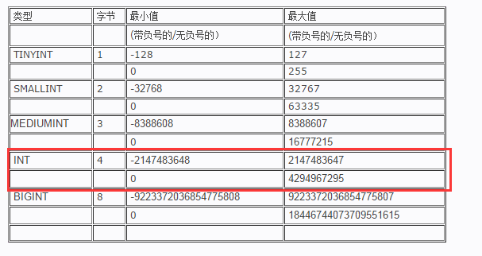
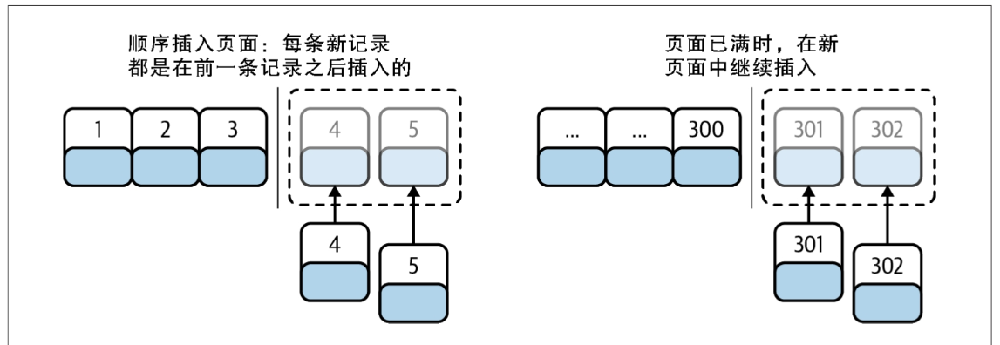
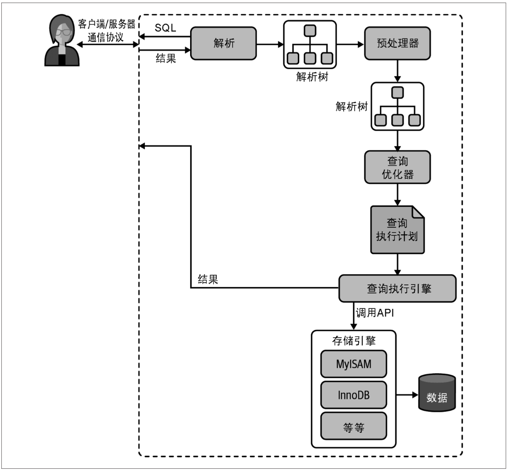
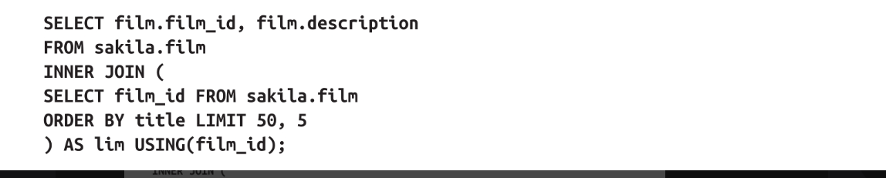
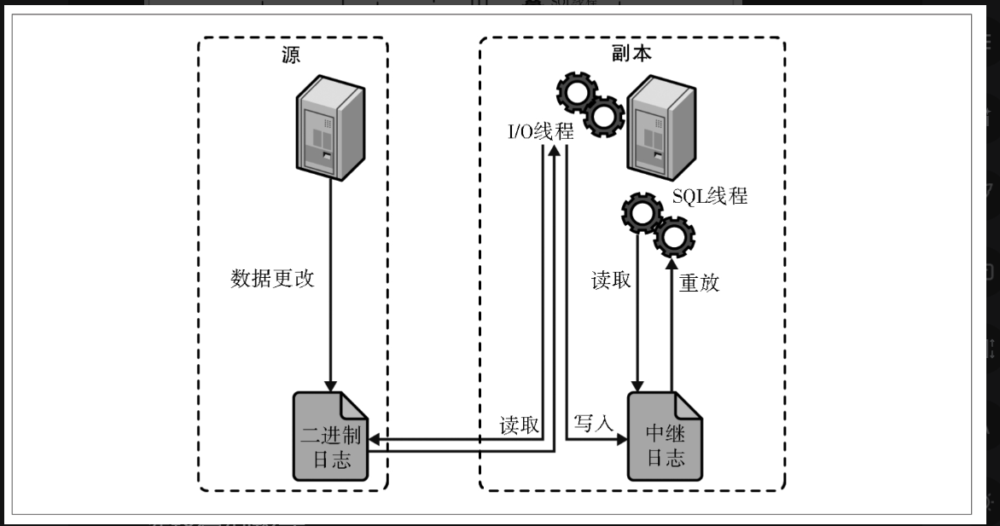

[TOC]
高性能Mysql
字段类型
整数类型
有两种类型的数字：整数(whole number)和实数（real number，带有小数部分的数字）。如果存储整数，可以使用这几种整数类型：TINYINT、SMALLINT、MEDIUMINT、INT或BIGINT。它们分别使用8、16、24、32和64位存储空间。可以存储的值的范围从-2(N-1)到2(N-1)-1，其中N是存储空间的位数。整数类型有可选的UNSIGNED属性，表示不允许负值，这大致可以使正数的上限提高一倍。例如，TINYINT UNSIGNED可以存储的值的范围是0～255，而TINYINT的值的存储范围是-128～127。有符号和无符号类型使用相同的存储空间，并具有相同的性能，因此可以根据数据实际范围选择合适的类型。MySQL可以为整数类型指定宽度，例如，INT(11)，这对大多数应用毫无意义：它不会限制值的合法范围，只是规定了MySQL的一些交互工具（例如，MySQL命令行客户端用来显示字符的个数。对于存储和计算来说，INT(1)和INT(20)是相同的。

实数类型
FLOAT和DOUBLE类型支持使用标准的浮点运算进行近似计算。如果你需要知道浮点运算是怎么计算的，则需要研究平台的浮点数的具体实现方式。有两种方式可以指定浮点列所需的精度，这可能会导致MySQL以静默方式选择不同的数据类型，或者在存储值时对其进行近似处理。这些精度说明符是非标准的，因此我们建议只指定数据类型，不指定精度。浮点类型通常比DECIMAL使用更少的空间来存储相同范围的值。FLOAT列使用4字节的存储空间。DOUBLE占用8字节，比FLOAT具有更高的精度和更大的值范围。与整数类型一样，你只能选择存储类型；MySQL会使用DOUBLE进行浮点类型的内部计算。
由于额外的空间需求和计算成本，应该尽量只在对小数进行精确计算时才使用ECIMAL——例如，存储财务数据。但在一些大容量的场景，可以考虑使用BIGINT代替DECIMAL，将需要存储的货币单位根据小数的位数乘以相应的倍数即可。假设要存储财务数据并精确到万分之一分，则可以把所有金额乘以一百万，然后将结果存储在BIGINT里，这样可以同时避免浮点存储计算不精确和DECIMAL精确计算代价高的问题。
字符串类型
MySQL支持多种字符串数据类型，每种类型还有许多变体。每个字符串列可以有自己的字符集和该字符集的排序规则集。VARCHAR和CHAR是两种最主要的字符串类型。下面的描述假设使用的存储引擎是InnoDB。先来看看VARCHAR和CHAR值通常是如何存储在磁盘上的。请注意，存储引擎在内存中存储CHAR或VARCHAR值的方式可能与在磁盘上存储该值的方式不同，并且服务器在从存储引擎检索该值时可能会将其转换为另一种存储格式。下面是关于两种类型的一些比较。
-
VARCHAR用于存储可变长度的字符串，是最常见的字符串数据类型。它比固定长度的类型更节省空间，因为它仅使用必要的空间（即，更少的空间用于存储更短的值）。VARCHAR需要额外使用1或2字节记录字符串的长度：如果列的最大长度小于或等于255字节，则只使用1字节表示，否则使用2字节。假设采用latin1字符集，一个VARCHAR(10)的列需要11字节的存储空间。VARCHAR(1000)的列则需要1002个字节，因为需要2字节存储长度信息。VARCHAR节省了存储空间，所以对性能也有帮助。但是，由于行是可变长度的，在更新时可能会增长，这会导致额外的工作。如果行的增长使得原位置无法容纳更多内容，则处理行为取决于所使用的存储引擎。例如，InnoDB可能需要分割页面来容纳行。其他一些存储引擎也许不在原数据位置更新数据。下面这些情况使用VARCHAR是合适的：字符串列的最大长度远大于平均长度；列的更新很少，所以碎片不是问题；使用了像UTF-8这样复杂的字符集，每个字符都使用不同的字节数进行存储。InnoDB更为复杂，它可以将过长的VARCHAR值存储为BLOB。我们稍后再讨论
-
CHAR是固定长度的：MySQL总是为定义的字符串长度分配足够的空间。当存储CHAR值时，MySQL删除所有尾随空格。如果需要进行比较，值会用空格填充。
与CHAR和VARCHAR类似的类型还有BINARY和VARBINARY，它们存储的是二进制字符串。二进制字符串与常规字符串非常相似，但它们存储的是字节而不是字符。填充也不同：MySQL填充BINANRY用的是\0（零字节）而不是空格，并且在检索时不会去除填充值。当需要存储二进制数据，并且希望MySQL将值作为字节而不是字符进行比较时，这些类型非常有用。字节比较的优势不仅仅是大小写不敏感。MySQL比较BINARY字符串时，每次按一个字节，并且根据该字节的数值进行比较。因此，二进制比较比字符比较简单得多，因此速度更快。
使用VARCHAR(5)和VARCHAR(200)存储’hello’的空间开销是一样的。那么使用更短的列有什么优势吗？事实证明有很大的优势。较大的列会使用更多的内存，因为MySQL通常会在内部分配固定大小的内存块来保存值。这对于使用内存临时表的排序或操作来说尤其糟糕。在利用磁盘临时表进行文件排序时也同样糟糕。最好的策略是只分配真正需要的空间。
-
BLOB和TEXT类型BLOB和TEXT都是为存储很大的数据而设计的字符串数据类型，分别采用二进制和字符方式存储。实际上，它们分别属于两组不同的数据类型家族：字符类型是TINYTEXT、SMALLTEXT、TEXT、MEDIUMTEXT和LONGTEXT；二进制类型是TINYBLOB、SMALLBLOB、BLOB、MEDIUMBLOB、LONGBLOB。BLOB是SMALLBLOB的同义词，TEXT是SMALLTEXT的同义词。与其他数据类型不同，MySQL把每个BLOB和TEXT值当作一个具有自己标识的对象来处理。存储引擎通常会专门存储它们。当BLOB和TEXT值太大时，InnoDB会使用独立的“外部”存储区域，此时每个值在行内需要1～4字节的存储空间，然后在外部存储区域需要足够的空间来存储实际的值。BLOB和TEXT家族之间的唯一区别是，BLOB类型存储的是二进制数据，没有排序规则或字符集，但TEXT类型有字符集和排序规则。MySQL对BLOB和TEXT列的排序与其他类型不同：它只对这些列的最前max_sort_length字节而不是整个字符串做排序。如果只需要按前面少数几个字符排序，可以减小max_sort_length服务器变量的值。MySQL不能将BLOB和TEXT数据类型的完整字符串放入索引，也不能使用索引进行排序。
-
有时可以使用ENUM（枚举）列代替常规的字符串类型。ENUM列可以存储一组预定义的不同字符串值。MySQL在存储枚举时非常紧凑，会根据列表值的数量压缩到1或者2字节中。在内部会将每个值在列表中的位置保存为整数
日期和时间类型
MySQL中有很多数据类型用以支持各种各样的日期和时间值，比如YEAR和DATE。MySQL可以存储的最小时间粒度是微秒。大多数时间类型都没有其他选择，因此不存在哪一种是最佳选择的问题。唯一的问题是，当需要同时存储日期和时间时该怎么做。MySQL提供了两种非常相似的数据类型来实现这一需求：DATETIME和TIMESTAMP。对于许多应用程序来说，两者都可以，但在某些场景，一个比另一
- DATETIME这种类型可以保存大范围的数值，从1000年到9999年，精度为1微秒。它以YYYYMMDDHHMMSS格式存储压缩成整数的日期和时间，且与时区无关。这需要8字节的存储空间。默认情况下，MySQL以可排序、无歧义的格式显示DATETIME值，例如，2008-01-16 22：37：08。这是ANSI表示日期和时间的标准方式。
- TIMESTAMP顾名思义，TIMESTAMP类型存储自1970年1月1日格林尼治标准时间(GMT)午夜以来经过的秒数——与UNIX时间戳相同。TIMESTAMP只使用4字节的存储空间，所以它的范围比DATETIME小得多：只能表示从1970年到2038年1月19日
位压缩数据类型
MySQL有几种使用值中的单个位来紧凑地存储数据的类型。所有这些位压缩类型，不管底层存储和处理方式如何，从技术上来说都是字符串类型。
- BIT可以使用BIT列存储一个或多个true/false值。BIT(1)定义一个包含1位的字段，BIT(2)存储2位的字段，依此类推；BIT列的最大长度为64位。InnoDB将每一列存储为足够容纳这些位的最小整数类型，所以使用BIT列不会节省任何存储空间。MySQL在处理时会将BIT视为字符串类型，而不是数字类型。当检索BIT(1)的值时，结果是一个包含二进制值0或1的字符串，而不是ASCII码的“0”或“1”。但是，如果在数字上下文中检索该值，则会将BIT字符串转换为数字。
- SET如果需要存储多个true/false值，可以考虑使用MySQL原生的SET数据类型，可以将多列组合成一列，这在MySQL内部是以一组打包的位的集合来表示的。这样可以更有效地利用存储空间，MySQL具有FIND_IN_SET()和FIELD()等函数，使其易于在查询中使用。
JSON数据类型
MySQL有原生的JSON数据类型，可以方便地直接在表中的JSON结构部分进行操作。纯粹主义者可能会认为，在数据库中存储原始JSON是一种反范式，因为理想情况下，schema应该是JSON中具体字段的表示。新手在查看JSON数据类型时，可能会发现这是避免创建和管理独立字段的捷径。
总的来说，决定使用原生SQL还是JSON取决于在数据库中存储JSON的便捷性是否大于性能。如果每天访问这些数据数百万次或数十亿次，速度差异就会累加起来
选择标识符
一般来说，标识符是引用行及通常使其唯一的方式。例如，如果你有一个关于用户的表，可能希望为每个用户分配一个数字ID或唯一的用户名。此字段可能是主键中的部分或全部。为标识符列选择合适的数据类型非常重要。与其他列相比，更有可能将标识符列与其他值（例如，在联接中）进行比较，并使用它们进行查找。标识符列也可能在其他表中作为外键，因此为标识符列选择数据类型时，应该与联接表中的对应列保持一致。（正如我们在本章前面演示的，在关联表中使用相同的数据类型是一个好主意，因为这些列很可能在联接中使用。）
- 整数类型整数通常是标识符的最佳选择，因为它们速度快，并且可以自动递增。AUTO_INCREMENT是一个列属性，可以为新的行自动生成一个整数类型的值。例如，计费系统可能需要为每个客户生成新发票，使用AUTO_INCREMENT意味着生成的第一张发票是1，第二张是2，依此类推。请注意，应该确保选择适合预期数据增长的整数大小，与整数意外耗尽有关的系统停机事故可不止发生一次。
- 对于标识符来说，ENUM和SET类型通常是糟糕的选择，尽管对某些只包含固定状态或者类型的静态“定义表”来说可能是没有问题的。ENUM和SET列适用于保存
- 字符串类型如果可能，应避免使用字符串类型作为标识符的数据类型**，因为它们很消耗空间，而且通常比整数类型慢**。对于完全“随机”的字符串要非常小心，如MD5()、SHA1()或UUID()生成的字符串。这些函数生成的新值会任意分布在很大的空间内，这会减慢INSERT和某些类型的SELECT查询的速度：
- 因为插入的值会写到索引的随机位置，所以会使得INSERT查询变慢。这会导致页分裂、磁盘随机访问，以及对于聚簇存储引擎产生聚簇索引碎片。
- SELECT查询也会变慢，因为逻辑上相邻的行会广泛分布在磁盘和内存中。
- 对于所有类型的查询，随机值都会导致缓存的性能低下，因为它们会破坏引用的局部性，而这正是缓存的工作原理。如果整个数据集都是“热的”，那么将任何特定部分的数据缓存到内存中都没有任何好处，而且如果工作集比内存大，缓存就会出现大量刷新和不命中。果存储通用唯一标识符(UUID)值，则应该删除破折号，或者更好的做法是，使用UNHEX()函数将UUID值转换为16字节的数字，并将其存储在一个BINARY(16)列中。可以使用HEX()函数以十六进制格式检索值。
特殊数据类型
某些类型的数据并不直接对应于可用的内置类型。IPv4地址就是一个很好的例子。人们通常使用VARCHAR(15)列来存储IP地址。然而，它们实际上是32位无符号整数，而不是字符串。用小数点将地址分成四段的表示方法只是为了让人们阅读容易，所以应该将I P地址存储为无符号整数。MySQL提供了INET_ATON()和INET_NTOA()函数来在这两种表示形式之间进行转换。使用的空间从VARCHAR(15)的约16字节缩减到无符号32位整数的4字节。如果你担心数据库的可读性，不想继续使用函数查看行数据，请记住MySQL有视图，可以使用视图来简化数据查看的复杂性。
MySQL schema设计中的陷阱
尽管设计原则有好有坏，但MySQL的实现方式会带来一些问题，这意味着你也可能会犯MySQL特有的错误。本节讨论我们在MySQL schema设计中观察到的问题。它可能会帮助你避免这些错误，并让你选择更适合MySQL具体实现的替代方案。
太多的列
MySQL的存储引擎API通过在服务器和存储引擎之间以行缓冲区格式复制行来工作；然后，服务器将缓冲区解码为列。将行缓冲区转换为具有解码列的行数据结构的操作代价是非常高的。InnoDB的行格式总是需要转换的。这种转换的成本取决于列数。当调查一个具有非常宽的表（数百列）的客户的高CPU消耗问题时，我们发现这种转换代价可能会变得非常昂贵，尽管实际上只使用了几列。如果计划使用数百列，请注意服务器的性能特征会有所不同。
太多的联接
所谓的实体属性值(entity attribute value，EAV)设计模式是一种被普遍认为糟糕的设计模式的典型案例，尤其是在MySQL中效果不佳。MySQL限制每个联接有61个表，而E AV模式设计的数据库需要许多自联接。我们已经看到不少E AV模式设计的数据库最终超过了这个限制。然而，即使联接数远小于61，规划和优化查询的成本对MySQL来说也会成为问题。一个粗略的经验法则是，如果需要以高并发性快速执行查询，那么每个查询最好少于十几个的表。
全能的枚举
要小心过度使用ENUM。下面是我们看到的一个例子：schema中大量地散布着这种模式。在任何具有枚举值类型的数据库中，这可能是一个值得商榷的设计决策
变相的枚举
ENUM列允许在列中保存一组已定义值中的单个值。SET列则允许在列中保存一组已定义值中的一个或多个值。有时很容易混淆。这里有一个例子：如果这里真和假两种情况不会同时出现，那么毫无疑问应该使用ENUM列而不是SET列。
NULL不是虚拟值
我们之前说过避免使用NULL的好处，并且建议尽可能考虑其他选择。即使需要在表中存储事实上的“空值”，也可能不需要使用NULL。也许可以使用0、特殊值或空字符串作为代替。但是遵循这个原则也不要走极端。当需要表示未知值时，不要太害怕使用NULL。在某些情况下，使用NULL比使用某个虚拟常数更好。从受约束类型的域中选择一个值，例如使用-1表示一个未知的整数，可能会使代码复杂化，容易引入bug，并通常会把事情搞得一团糟。处理NULL并不容易，但通常比其他替代方案更好
小结
- 尽量避免在设计中出现极端情况，例如，强制执行非常复杂的查询或者包含很多列的表设计（很多的意思是介于有点多和非常多之间）。
- 使用小的、简单的、适当的数据类型，并避免使用NULL，除非确实是对真实数据进行建模的正确方法。
- 尝试使用相同的数据类型来存储相似或相关的值，尤其是在联接条件中使用这些值时。
- 注意可变长度字符串，它可能会导致临时表和排序的全长内存分配不乐观。
- 如果可能的话，尝试使用整数作为标识符。
- 避免使用一些传统的MySQL技巧，例如，指定浮点数的精度或整数的显示宽度。
- 小心使用ENUM和SET类型。它们很方便，但也可能被滥用，有时还很棘手。另外最好避免使用BIT类型。
创建高性能的索引
索引，在MySQL中也叫作键(key)，是存储引擎用于快速找到记录的一种数据结构。本章将讨论索引的一些有用的特性。要想获得好的性能，索引至关重要。尤其是当表中的数据量越来越大时，索引对性能的影响愈发重要。在数据量较小且负载较低时，缺少合适的索引对性能的影响可能还不明显，但当数据量逐渐增大时，性能会急剧下降。不过，索引却经常被忽略，有时候甚至被误解，所以在实际案例中，经常会遇到由糟糕索引导致的问题。这也是为什么我们把本章放在了全书靠前的位置，甚至比查询优化还要靠前。索引优化应该是对查询性能优化最有效的手段了。索引能够轻易将查询性能提高几个数量级，“最优”的索引有时比一个“好的”索引性能要好两个数量级。创建一个真正“最优”的索引经常需要重写查询
InnoDB存储引擎有一个被称为自适应哈希索引的特性。当InnoDB发现某些索引值被非常频繁地被访问时，它会在原有的B-tree索引之上，在内存中再构建一个哈希索引。这就让B-tree索引也具备了一些哈希索引的优势，例如，可以实现非常快速的哈希查找。这个过程是完全自动化的，用户无法进行控制或者配置。不过，可以通过参数彻底关闭自适应哈希索引这个特性
- 全值匹配 全值匹配指的是和索引中的所有列匹配，例如，前面提到的索引可用于查找姓名为Cuba Allen、出生于1960-01-01的人。
- 匹配最左前缀例如，前面提到的索引可用于查找所有姓为Allen的人，即只使用索引的第一列。
- 匹配列前缀 也可以只匹配某一列的值的开头部分。例如，前面提到的索引可用于查找所有姓以J开头的人。这里也只使用了索引的第一列。
- 匹配范围值例如，前面提到的索引可用于查找姓在Allen和Barrymore之间的人。这里也只使用了索引的第一列。精确匹配某一列而范围匹配另外一列前面提到的索引也可用于查找所有姓为Allen，并且名字是字母K开头（比如Kim、Karl等）的人，即第一列last_name是全匹配，第二列first_name是范围匹配。
- 只访问索引的查询 B-tree索引通常可以支持“只访问索引的查询”，即查询只需要访问索引，而无须访问数据行。后面我们将单独讨论这种“覆盖索引”的优化。因为索引树中的节点是有序的，所以除了按值查找，索引还可以用于查询中的ORDER BY操作（按顺序查找）。
- 一般来说，如果B-tree可以按照某种方式查找到值，那么也可以按照这种方式去排序。所以，如果ORDER BY子句满足前面列出的几种查询类型，则这个索引也可以用于这类排序场景。下面是一些关于B-tree索引的限制。
不能使用索引
- 如果不是按照索引的最左列开始查找，则无法使用索引。例如，上面例子中的索引无法用于查找名字为Bill的人，也无法查找某个特定生日的人，因为这两列都不是最左数据列。类似地，也无法查找姓氏以某个字母结尾的人。
- 不能跳过索引中的列。也就是说，前面所述的索引无法用于查找姓为Smith并且在某个特定日期出生的人。如果不指定名(first_name)，则MySQL只能使用索引的第一列。
- 如果查询中有某列的范围查询，则其右边所有列都无法使用索引优化查找。例如，有查询WHERE last_name=‘Smith’AND first_name LIKE’J%‘AND dob=‘1976-12-23’，这个查询只能使用索引的前两列，因为这里LIKE是一个范围条件（不过，MySQL可以把其余列用于其他目的）。如果范围查询列值的数量有限，那么可以通过使用多个等于条件来代替范围条件。现在可以看到前面提到的索引列的顺序是多么重要：这些限制都和索引列的顺序有关。在优化性能的时候，可能需要使用相同的列但顺序不同的索引来满足不同类型的查询需求。也有些限制并不是B-tree本身导致的，而是MySQL查询优化器和存储引擎使用索引的方式导致的，这部分限制在未来的版本中可能就不再是限制了。
全文索引
FULLTEXT是一种特殊类型的索引，它查找的是文本中的关键词，而不是直接比较索引中的值。全文索引和其他几类索引的匹配方式完全不一样。它有许多需要注意的细节，如停用词、词干、复数、布尔搜索等。全文索引更类似于搜索引擎做的事情，而不是简单的WHERE条件匹配。在相同的列上同时创建全文索引和基于值的B-tree索引并不会有冲突，全文索引适用于MATCH AGAINST操作，而不是普通的WHERE条件操作。
高性能的索引策略
前缀索引和索引的选择性
有时候为了提升索引的性能，同时也节省索引空间，可以只对字段的前一部分字符进行索引，这样做的缺点是，会降低索引的选择性。索引的选择性是指，不重复的索引值（也称为基数，cardinality）和数据表的记录总数(T)的比值，范围从1/T到1之间。索引的选择性越高则查询效率越高，因为选择性高的索引可以让MySQL在查找时过滤掉更多的行。唯一索引的选择性是1，这是最好的索引选择性，性能也是最好的。
一般情况下，列前缀的选择性也是足够高的，足以满足查询性能。对于BLOB、TEXT或者很长的VARCHAR类型的列，必须使用前缀索引，因为MySQL并不支持对这些列的完整内容进行索引。这里的关键点在于，既要选择足够长的前缀以保证较高的选择性，同时又不能太长（以便节约空间）。前缀应该足够长，以使得前缀索引的选择性接近于索引整列。换句话说，前缀的“基数”应该接近于完整列的“基数”。
前缀索引是一种能使索引更小、更快的有效办法，但它也有缺点：MySQL无法使用前缀索引做ORDER BY和GROUP BY操作，也无法使用前缀索引做覆盖扫描。
多列索引
很多人对多列索引的理解都不够。一个常见的错误就是，为每列创建独立的索引，或者按照错误的顺序创建多列索引。
在多列上独立地创建多个单列索引，在大部分情况下并不能提高MySQL的查询性能。MySQL引入了一种叫**“索引合并”(index merge)的策略**，它在一定程度上可以使用表中的多个单列索引来定位指定的行。在这种情况下，查询能够同时使用两个单列索引进行扫描，并将结果进行合并。这种算法有三个变种：OR条件的联合(union)，AND条件的相交(intersection)，组合前两种情况的联合及相交。MySQL会使用这类技术来优化复杂查询，所以在某些语句的Extra列中还可以看到嵌套操作。索引合并策略有时候效果非常不错，但更多的时候，它说明了表中的索引建得很糟糕：
- 当优化器需要对多个索引做相交（相交操作是使用“索引合并”的一种情况，另一种是做联合操作）操作时（通常有多个AND条件），通常意味着需要一个包含所有相关列的多列索引，而不是多个独立的单列索引。
- 当优化器需要对多个索引做联合操作时（通常有多个OR条件），通常需要在算法的缓存、排序和合并操作上耗费大量CPU和内存资源，尤其是当其中有些索引的选择性不高，需要合并扫描返回的大量数据的时候。
- 更重要的是，优化器不会把这些操作计算到“查询成本”(cost)中，优化器只关心随机页面读取。这会使得查询的成本被“低估”，导致该执行计划还不如直接进行全表扫描。这样做不但会消耗更多的CPU和内存资源，还可能会影响并发的查询，但如果单独运行这样的查询则往往会忽略对并发性的影响。通常来说，使用UNION改写查询，往往是最好的办法。
如果在EXPLAIN中看到有索引合并，那么就应该好好检查一下查询语句的写法和表的结构，看是不是已经是最优的。也可以通过参数optimizer_switch来关闭索引合并功能，还可以使用IGNORE INDEX语法让优化器强制忽略掉某些索引，从而避免优化器使用包含索引合并的执行计划。
选择合适的索引列顺序
最容易让人感到困惑的问题之一就是索引列的顺序。正确的顺序依赖于使用该索引的查询语句，同时还需要考虑如何更好地满足排序和分组操作的需要。
对于如何选择索引的列顺序有一个重要的经验法则：将选择性最高的列放到索引最前列。这个建议准确吗？在很多场景中可能有帮助，但是要全面地考虑各种场景的话，考虑如何避免大量随机I/O和排序可能更重要。（场景不同则选择不同，没有一个放之四海皆准的法则。这里只是说明，这个经验法则可能没有你想象中那么重要。）
当不需要考虑排序和分组时，将选择性最高的列放在前面通常是很好的。这时索引的作用只是优化查询语句中的WHERE条件。在这种情况下，按这个原则设计的索引确实能够最快地过滤出需要的行，对于在WHERE子句中只使用了索引部分前缀列的查询来说，选择性也更高。然而，性能不只依赖于所有索引列的选择性（整体基数），也和查询条件的具体值有关，也就是和值的分布有关。这和前面介绍的选择前缀的长度需要考虑的因素一样。可能需要根据那些运行频率最高的查询来调整索引列的顺序，让这种情况下索引的选择性最高。
聚簇索引
聚簇索引并不是一种单独的索引类型，而是一种数据存储方式。具体的细节依赖于其实现方式，但InnoDB的聚簇索引实际上在同一个结构中保存了B-tree索引和数据行。当表有聚簇索引时，它的数据行实际上存放在索引的叶子页(leaf page)中。术语“聚簇”表示数据行和相邻的键值紧凑地存储在一起。因为无法同时把数据行存放在两个不同的地方，所以一个表只能有一个聚簇索引（不过，覆盖索引可以模拟多个聚簇索引的情况，本章后面将详细介绍）。因为是存储引擎负责实现索引，因此，不是所有的存储引擎都支持聚簇索引。本节我们主要关注InnoDB，但是这里讨论的原理对于任何支持聚簇索引的存储引擎都是适用的。
如果你没有定义主键，InnoDB会选择一个唯一的非空索引代替。如果没有这样的索引，InnoDB会隐式定义一个主键来作为聚簇索引。这样做的缺点在于，所有需要使用这种隐藏主键的表都依赖一个单点的“自增值”，这可能会导致非常高的锁竞争，从而出现性能问题。
聚集的数据有一些重要的优点：
- 你可以把相互关联的数据保存在一起。例如，在实现电子邮箱应用时，可以根据用户ID来聚集数据，这样只需要从磁盘读取少数的数据页就能获取某个用户的全部邮件。如果没有使用聚簇索引，则每封邮件都可能导致一次磁盘I/O。
- 数据访问更快。聚簇索引将索引和数据保存在同一个B-tree中，因此从聚簇索引中获取数据通常比在非聚簇索引中查找要快。
- 使用覆盖索引扫描的查询可以直接使用页节点中的主键值。如果在设计表和查询时能充分利用上面的优点，那么就能极大地提升性能。
同时，聚簇索引也有一些缺点：
- 聚簇数据最大限度地提高了I/O密集型应用的性能，但如果数据全部都放在内存中，则访问的顺序就没那么重要了，聚簇索引也就没什么优势了。
- 插入速度严重依赖于插入顺序。按照主键的顺序插入行是将数据加载到InnoDB表中最快的方式。但如果不是按照主键的顺序加载数据，那么在加载完成后最好使用OPTIMIZE TABLE命令重新组织一下表。
- 更新聚簇索引列的代价很高，因为它会强制InnoDB将每个被更新的行移动到新的位置。
- 基于聚簇索引的表在插入新行，或者主键被更新导致需要移动行的时候，可能面临页分裂(page split)的问题。当行的主键值要求必须将这一行插入某个已满的页中时，存储引擎会将该页分裂成两个页面来容纳该行，这就是一次页分裂操作。页分裂会导致表占用更多的磁盘空间。
- 聚簇索引可能导致全表扫描变慢，尤其是行比较稀疏，或者由于页分裂导致数据存储不连续的时候。
- 二级索引（非聚簇索引）可能比想象中的要更大，因为二级索引的叶子节点包含了引用行的主键列。
- 二级索引访问需要两次索引查找，而不是一次。为什么二级索引需要两次索引查找？答案是，二级索引中保存的是“行指针”。要记住，**二级索引叶子节点保存的不是指向行的物理位置的指针，而是行的主键值。这意味着通过二级索引查找行，存储引擎需要找到二级索引的叶子节点，以获得对应的主键值，然后根据这个值去聚簇索引中查找对应的行。**这里做了双倍工作：两次B-tree查找而不是一次。对于InnoDB，自适应哈希索引（参考本章前面的“B-tree索引”一节）能够减少这样的重复工作。
InnoDB的数据分布
聚簇索引的每一个叶子节点都包含了主键值、事务ID、用于事务和MVCC的回滚指针，以及所有的剩余列。
InnoDB的二级索引的叶子节点中存储的是主键值，并以此作为指向行的“指针”。这样的策略减少了当出现行移动或者数据页分裂时二级索引的维护工作。使用主键值作为指针会让二级索引占用更多的空间，换来的好处是，InnoDB在移动行时无须更新二级索引中的这个“指针”。
使用顺序递增的主键

因为主键的值是顺序的，所以InnoDB把每一条记录都存储在上一条记录的后面。当达到页的最大填充因子时（InnoDB默认的最大填充因子是页大小的15/16，留出部分空间用于以后修改），下一条记录就会被写入新的页中。一旦数据按照这种顺序写入，主键页就会近似于被顺序的记录填满，这也正是所期望的结果（然而，二级索引页可能有所不同）。
使用非顺序递增的主键
因为新写入的记录的主键值不一定比之前插入的大，所以InnoDB无法简单地总是把新记录插到索引的最后，而是需要为新记录寻找合适的位置——通常是已有数据的中间位置——并且分配空间。这会增加很多额外工作，并导致数据分布不够优化。下面是总结的一些缺点：
- 写入的目标页可能已经刷到磁盘上并从缓存中移除，或者还没有被加载到缓存中，InnoDB在插入之前不得不先找到，并从磁盘将目标页读取到内存中。这将导致大量的随机I/O。
- 因为写入是乱序的，所以InnoDB不得不频繁地做页分裂操作，以便为新记录分配空间。页分裂会导致移动大量数据，一次插入最少需要修改三个页而不是一个。
- 由于频繁的页分裂，页会变得稀疏并被不规则地填充，所以最终数据会有碎片。在把这些随机值载入聚簇索引后，最好做一次OPTIMIZE TABLE来重建表并优化页的填充情况。
使用InnoDB时应该尽可能地按主键顺序插入数据，并且尽可能地按照单调增加的聚簇键的值顺序插入新记录。
什么时候按主键顺序插入反而会更糟
对于高并发的工作负载，在InnoDB中按主键顺序插入可能会造成明显的写入竞争。主键的上界会成为“热点”。因为所有的插入都发生在这里，所以并发插入可能导致间隙锁竞争。如果使用自增主键，还会有AUTO_INCREMENT锁机制；
覆盖索引
大家通常都会根据查询的WHERE条件来创建合适的索引，不过这只是索引优化的一个方面。设计优秀的索引应该考虑到整个查询，而不单是WHERE条件部分。索引的确是一种高效找到数据的方式，但是如果MySQL还可以使用索引直接获取列的数据，这样就不再需要读取数据行了。如果索引的叶子节点中已经包含要查询的数据，那么还有什么必要再回表查询呢？如果一个索引包含（或者说覆盖）所有需要查询的字段的值，我们就称之为覆盖索引。需要注意的是，只有B-tree索引可以用于覆盖索引。
覆盖索引是非常有用的工具，能够极大地提高性能。试想一下，如果查询只需要扫描索引而无须回表，会带来多少好处：
- 索引条目通常远小于数据行大小，所以如果只需要读取索引，那么MySQL就会极大地减少数据访问量。这对缓存型的应用负载非常重要，因为在这种情况下，响应时间大部分花费在数据拷贝上。覆盖索引对于I/O密集型的应用也有帮助，因为索引比数据更小，更容易全部放入内存中。
- 因为索引是按照列值的顺序存储的（至少在单页内如此），所以对于I/O密集型的范围查询会比随机从磁盘读取每一行数据的I/O要少得多。可以通过OPTIMIZE命令使得索引完全实现顺序排列，这让简单的范围查询能使用完全顺序的索引访问。
- 由于InnoDB的聚簇索引的特点，覆盖索引对InnoDB表特别有用。InnoDB的二级索引在叶子节点中保存了记录的主键值，所以如果二级索引能够覆盖查询，则可以避免对主键索引的二次查询。
使用索引扫描来做排序
MySQL有两种方式可以生成有序的结果：通过排序操作，或者按索引顺序扫描。如果在EXPLAIN的输出结果中，type列的值为“index”，则说明MySQL使用了索引扫描来做排序。
扫描索引本身是很快的，因为只需要从一条索引记录移动到紧接着的下一条记录。但如果索引不能覆盖查询所需的全部列，那么就不得不每扫描一条索引记录都回表查询一次对应的记录。这基本上都是随机I/O，因此按索引顺序读取数据的速度通常要比顺序地全表扫描慢，尤其是在I/O密集型的应用负载上。
MySQL可以使用同一个索引既满足排序，又用于查找行。因此，如果可能，设计索引时应该尽可能地同时满足这两项任务，这样是最好的。只有当索引的顺序和ORDER BY子句的顺序完全一致，并且所有列的排序方向（倒序或正序）都一样时，MySQL才能使用索引来对结果做排序。如果查询需要联接多张表，则只有当ORDER BY子句引用的字段全部在第一个表中时，才能使用索引做排序。ORDER BY子句和查找型查询的限制是一样的：需要满足索引的最左前缀的要求，否则，MySQL需要执行排序操作，而无法利用索引排序。
有一种特殊情况，如果前导列为常量的时候，ORDER BY子句中的列也可以不满足索引的最左前缀的要求。如果在WHERE子句或者JOIN子句中将这些列指定为了常量，就可以“填补”索引字段的间隙了。
-- 索引为idx_merch_id_shop_id(merch_id, shop_id)
select *
from t_material
where merch_id = '123456'
order by shop_id;
因为merch_id已经指定了，所以也会走索引。
下面是一些不能使用索引做排序的查询：
-
查询使用了两种不同的排序方向，但是索引中的列都是按正序排序的。
-
查询的ORDER BY子句中，引用了一个不在索引中的列
-
查询的WHERE和ORDER BY中的列无法组合成索引的最左前缀
-
查询在索引列的第一列上是范围条件，所以MySQL无法使用索引的其余列
-- 大于或者等于 select * from t_material where merch_id > '123456' order by shop_id; -- in select * from t_material where merch_id in ('123456', '1234567') order by shop_id; -- or select * from t_material where merch_id = '123456' or merch_id = '1234567' order by shop_id;
冗余和重复索引
不幸的是，MySQL允许在相同列上创建多个相同的索引。虽然MySQL会抛出一个警告，但是并不会阻止你这么做。MySQL需要单独维护重复的索引，优化器在优化查询的时候也需要逐个地进行评估，这会影响性能，同时也浪费磁盘空间。重复索引是指在相同的列上按照相同顺序创建的相同类型的索引。应该避免创建这样的重复索引，发现以后应该立即移除。
冗余索引和重复索引有一些不同。如果创建了索引(A，B)，再创建索引(A)就是冗余索引，因为这只是前一个索引的前缀索引，因此，索引(A，B)也可以当作索引(A)来使用（这种冗余只是对B-tree索引来说的）。但是如果再创建索引(B，A)，则不是冗余索引，索引(B)也不是，因为B不是索引(A，B)的最左前缀列。另外，如果新建的是其他不同类型的索引（例如，哈希索引或者全文索引），那么无论覆盖了哪些索引列，也不会是B-tree索引的冗余索引。
表中的索引越多，插入的速度越慢。一般来说，增加新索引会导致INSERT、UPDATE、DELETE等操作的速度变慢，特别是当新增索引后达到了内存瓶颈的时候。
解决冗余索引和重复索引的方法很简单，删除这些索引就可以了，但在删除或扩展索引的时候要非常小心。回忆一下，在前面的InnoDB的示例表中，因为二级索引的叶子节点包含了主键值，所以在列(A)上的索引就相当于在(A，ID)上的索引。如果有像WHERE A=5 ORDER BY ID这样的查询，这个索引会很有用。但如果将索引扩展为(A，B)，则实际上就变成了(A，B，ID)，那么上面查询的ORDERBY子句就无法使用该索引做排序，而只能用文件排序了。所以，建议使用Percona工具箱中的pt-upgrade工具来仔细检查计划中的索引变更。对于上述的两种情况，都可以考虑使用MySQL 8.0的不可见索引特性，而不是直接删除索引。要使用这个特性，可以通过ALTER TABLE语句，改变索引的一个标志位，使得优化器在确定执行计划时，忽略该索引。如果你发现计划删除的索引依旧有非常重要的作用，可以直接把索引改成可见，而不需要重新构建该索引。
未使用的索引
除了冗余索引和重复索引，可能还会有一些服务器永远不用的索引。这样的索引完全是累赘，建议删除。
找到未使用索引的最好办法就是使用系统数据库 performance_schema和sys。在sys数据库中，在table_io_waits_summary_by_index_usage视图中可以非常简单地知道哪些索引从来没有被使用过
减少索引和数据的碎片
B-tree索引可能会产生碎片化，这会降低查询的效率。碎片化的索引可能会以很差或者无序的方式存储在磁盘上。根据设计，B-tree索引需要随机磁盘访问才能定位到叶子页，所以随机访问总是不可避免的。然而，如果叶子页在物理分布上是顺序且紧密的，那么查询的性能就会更好。否则，对于范围查询、索引覆盖扫描等操作来说，速度可能会降低很多；对于索引覆盖扫描，这一点会表现得更加明显。表的数据存储也可能发生碎片化。然而，数据存储的碎片化比索引更加复杂。有三种类型的数据碎片。
- 行碎片(Row fragmentation)这种碎片指的是数据行被存储在多个地方的多个片段中。即使查询只从索引中访问一行记录，行碎片也会导致性能下降。
- 行间碎片(Intra-row fragmentation)行间碎片是指逻辑上顺序的页或者行，在磁盘上不是顺序存储的。行间碎片对诸如全表扫描和聚簇索引扫描之类的操作有很大的影响，因为这些操作原本能够从磁盘上顺序存储的数据中获益。
- 剩余空间碎片(Free space fragmentation)剩余空间碎片是指数据页中有大量的空余空间。这会导致服务器读取大量不需要的数据，从而造成浪费。
可以通过执行OPTIMIZE TABLE或者导出再导入的方式来重新整理数据。这对多数存储引擎都是有效的。
小结
在选择索引和编写利用这些索引的查询时，有如下三个原则始终需要记住：
- 单行访问是很慢的，特别是在机械硬盘中存储（SSD的随机I/O要快很多，不过这一点仍然成立）。如果服务器从存储中读取一个数据块只是为了获取其中一行，那么就浪费了很多工作。最好读取的块中能包含尽可能多的所需要的行。
- 按顺序访问范围数据是很快的，有两个原因。第一，顺序I/O不需要多次磁盘寻道，所以比随机I/O要快很多（特别是对于机械硬盘）。第二，如果服务器能够按需顺序读取数据，那么就不再需要额外的排序操作，并且GROUP BY查询也无须再做排序和将行按组进行聚合计算了。
- 索引覆盖查询是很快的。如果一个索引包含了查询需要的所有列，那么存储引擎就不需要再回表查找行。这避免了大量的单行访问，而上面的第一点已经写明单行访问是很慢的。
总的来说，编写查询语句时应该尽可能选择合适的索引以避免单行查找，尽可能地使用数据内部顺序从而避免额外的排序操作，并尽可能地使用索引覆盖查询。这与本章开头提到的Lahdenmaki和Leach的书中介绍的“三星”评价系统是一致的。
那么如何判断一个系统创建的索引是合理的呢？一般来说，我们建议按响应时间来对查询进行分析。找出那些消耗最长时间的查询或者那些给服务器带来最大压力的查询，然后检查这些查询的schema、SQL语句和索引结构，判断是否有查询扫描了太多的行，是否做了很多额外的排序或者使用了临时表，是否使用随机I/O访问数据，或者是否有太多回表查询查询那些不在索引中的列的操作。如果一个查询无法从所有可能的索引中获益，则应该看看是否可以创建一个更合适的索引来提升性能。如果不行，还可以看看是否可以重写该查询，将其转化成一个能够高效利用现有索引或者新创建索引的查询。
查询性能优化
在前面的章节中，我们介绍了如何设计最优的库表结构、如何建立最好的索引，这些对于提高性能来说是必不可少的。但这些还不够——还需要合理地设计查询。如果查询写得很糟糕，即使库表结构再合理、索引再合适，也无法实现高性能。查询优化、索引优化、库表结构优化需要齐头并进，一个不落。
为什么查询速度会慢
在尝试编写快速的查询之前，需要清楚一点，真正重要的是响应时间。如果把查询看作一个任务，那么它由一系列子任务组成，每个子任务都会消耗一定的时间。如果要优化查询，实际上要优化其子任务，要么消除其中一些子任务，要么减少子任务的执行次数，要么让子任务运行得更快。通常来说，查询的生命周期大致可以按照如下顺序来看：从客户端到服务器，然后在服务器上进行语法解析，生成执行计划，执行，并给客户端返回结果。其中，“执行”可以被认为是整个生命周期中最重要的阶段，这其中包括大量为了检索数据对存储引擎的调用以及调用后的数据处理，包括排序、分组等。在完成这些任务的时候，查询需要在不同的地方花费时间，包括网络、CPU计算、生成统计信息和执行计划、锁等待（互斥等待）等操作，尤其是向底层存储引擎检索数据的调用操作，这些调用需要在内存操作、CPU操作和内存不足时导致的I/O操作上消耗时间。根据存储引擎不同，可能还会产生大量的上下文切换以及系统调用。优化查询的目的就是减少和消除这些操作所花费的时间。再次声明一点，对于一个查询的全部生命周期，上面列得并不完整。这里我们只是想说明：了解查询的生命周期和清楚查询的时间消耗情况对于优化查询有很大意义。
慢查询基础：优化数据访问
一条查询，如果性能很差，最常见的原因是访问的数据太多。某些查询可能不可避免地需要筛选大量数据，但这并不常见。大部分性能低下的查询都可以通过减少访问的数据量的方式进行优化。对于低效的查询，我们发现通过下面两个步骤来分析总是很有效：
-
确认应用程序是否在检索大量且不必要的数据。这通常意味着访问了太多的行，但有时候也可能是访问了太多的列。
-
确认MySQL服务器层是否在分析大量不需要的数据行。
是否向数据库请求了不需要的数据
有些查询会请求超过实际需要的数据，然后这些多余的数据会被应用程序丢弃。这会给MySQL服务器带来额外的负担，并增加网络开销，另外，这也会消耗应用服务器的CPU和内存资源
-
查询了不需要的记录。先使用SELECT语句查询大量的结果，然后获取前面的N行后关闭结果集（例如，在新闻网站中取出100条记录，但是只是在页面上显示前面10条）。他们认为MySQL会执行查询，并只返回他们需要的10条数据，然后停止查询。实际情况是，MySQL会查询出全部的结果集，客户端的应用程序会接收全部的结果集数据，然后抛弃其中大部分数据。**最简单有效的解决方法就是在这样的查询后面加上LIMIT子句。**这个理解是有问题的，**mysql的查询本来就有这个问题-深分页问题，limit m n工作原理就是先读取前面m+n条记录，然后抛弃前m条，读后面n条想要的，所以m越大，偏移量越大，性能就越差。**具体可以看https://juejin.cn/post/7012016858379321358
-
多表联接时返回全部列
-
总是取出全部列，每次看到SELECT*的时候都需要用怀疑的眼光审视，是不是真的需要返回全部的列，很可能不是必需的。取出全部列，会让优化器无法完成索引覆盖扫描这类优化，还会为服务器带来额外的I/O、内存和CPU的消耗。
-
重复查询相同的数据
MySQL是否在扫描额外的记录
在确定查询只返回需要的数据以后，接下来应该看看查询为了返回结果是否扫描了过多的数据。对于MySQL，最简单的衡量查询开销的三个指标如下：
- 响应时间
- 扫描的行数
- 返回的行数
没有哪个指标能够完美地衡量查询的开销，但它们大致反映了MySQL在内部执行查询时需要访问多少数据，并可以大概推算出查询运行的时间。这三个指标都会被记录到MySQL的慢日志中，所以检查慢日志记录是找出扫描行数过多的查询的好办法。
响应时间
响应时间只是一个表面上的值。响应时间是两部分之和：服务时间和排队时间。服务时间是指数据库处理这个查询真正花了多长时间。排队时间是指服务器因为等待某些资源而没有真正执行查询的时间——可能是等I/O操作完成，也可能是等待行锁，等等。遗憾的是，我们无法把响应时间细分到上面这些部分，除非有什么办法能够逐个测量这些消耗，这很难做到。最常见和重要的是I/O等待和锁等待，但是实际情况更加复杂。实际上，I/O等待和锁等待非常重要，因为它们对于性能有着至关重要的影响。所以在不同类型的应用压力下，响应时间并没有一致的规律或者公式。诸如存储引擎的锁（表锁、行锁）、高并发资源竞争、硬件响应等诸多因素都会影响响应时间。所以，响应时间既可能是一个问题的结果也可能是一个问题的原因，不同案例情况不同。
当你看到一个查询的响应时间时，首先需要问问自己，这个响应时间是否是一个合理的值。实际上可以使用“快速上限估计”法来估算查询的响应时间。概括地说，了解这个查询需要哪些索引以及它的执行计划是什么，然后计算大概需要多少个顺序和随机I/O，再用其乘以在具体硬件条件下一次I/O的消耗时间。最后把这些消耗都加起来，就可以获得一个大概参考值来判断当前响应时间是不是一个合理的值。
扫描的行数和返回的行数
分析查询时，查看该查询扫描的行数是非常有帮助的。这在一定程度上能够说明该查询找到需要的数据的效率高不高。对于找出那些“糟糕”的查询，这个指标可能还不够完美，因为并不是所有行的访问代价都是相同的。较短的行的访问速度更快，内存中的行比磁盘中的行的访问速度要快得多。理想情况下扫描的行数和返回的行数应该是相同的，但实际中这种“美事”并不多。例如，在做一个联接查询时，服务器必须要扫描多行才能生成结果集中的一行。扫描的行数与返回的行数的比率通常很低，一般在1：1到10：1之间，不过有时候这个值也可能非常非常大。
扫描的行数和访问类型
在评估查询开销的时候，需要考虑从表中找到某一行数据的成本。MySQL有好几种访问方式可以查找并返回一行结果。有些访问方式可能需要扫描很多行才能返回一行结果，也有些访问方式可能无须扫描就能返回结果。EXPLAIN语句中的type列反映了访问类型。访问类型有很多种，从全表扫描到索引扫描、范围扫描、唯一索引查询、常数引用等。这里列出的这些，速度从慢到快，扫描的行数从多到少。你不需要记住这些访问类型，但需要明白扫描表、扫描索引、范围访问和单值访问的概念。如果你没办法找到合适的访问类型，那么最好的解决办法通常就是增加一个合适的索引，这也正是我们前一章讨论过的问题。现在应该明白为什么索引对于查询优化如此重要了吧。索引让MySQL以最高效、扫描行数最少的方式找到需要的记录。
一般地，MySQL能够使用如下三种方式应用WHERE条件，从好到坏依次为：
- 在索引中使用WHERE条件来过滤不匹配的记录。这是在存储引擎层完成的。
- 使用索引覆盖扫描（在Extra列中出现了Using index）来返回记录，直接从索引中过滤不需要的记录并返回命中的结果。这是在MySQL服务器层完成的，但无须再回表查询记录。
- 从数据表中返回数据，然后过滤不满足条件的记录（在Extra列中出现Usingwhere）。这在MySQL服务器层完成，MySQL需要先从数据表中读出记录然后过滤。
如果发现查询需要扫描大量的数据但只返回少数行，那么通常可以尝试下面的技巧去优化它：
- 使用索引覆盖扫描，把所有需要用的列都放到索引中，这样存储引擎无须回表获取对应行就可以返回结果了
- 改变库表结构。例如，使用单独的汇总表。
- 重写这个复杂的查询，让MySQL优化器能够以更优化的方式执行这个查询
重构查询的方式
在优化有问题的查询时，目标应该是找到获得实际需要的结果的替代方法——但这并不一定意味着从MySQL返回完全相同的结果集。有时候，可以将查询转换为返回相同结果的等价形式，以获得更好的性能。但是，如果可以获得更好的效率，还应该考虑重写查询以检索不同的结果。通过修改应用代码和查询，最终达到一样的目的。
一个复杂查询还是多个简单查询
设计查询的时候，一个需要考虑的重要问题是，是否需要将一个复杂的查询分成多个简单的查询。在传统实现中，总是强调需要数据库层完成尽可能多的工作，这样做的逻辑在于以前人们总是认为网络通信、查询解析和优化是一件代价很高的事情。但是这样的想法对于MySQL并不适用，因为MySQL从设计上让连接和断开连接都很轻量，在返回一个小的查询结果方面很高效。现代的网络速度比以前要快很多，能在很大程度上降低延迟。在某些版本的MySQL中，即使在一台通用服务器上，也能够运行每秒超过10万次的简单查询，即使是一个千兆网卡也能轻松满足每秒超过2000次的查询。所以运行多个小查询现在已经不是大问题了。在MySQL内部，每秒能够扫描内存中上百万行的数据，相比之下，MySQL响应数据给客户端就慢得多了。在其他条件都相同的时候，使用尽可能少的查询当然是更好的。但是有时候，将一个大查询分解为多个小查询是很有必要的。
切分查询
有时候对于一个大查询，我们需要“分而治之”，将大查询切分成小查询，每个查询的功能完全一样，只完成一小部分，每次只返回一小部分查询结果。
删除旧的数据就是一个很好的例子。定期清除大量数据时，如果用一个大的语句一次性完成的话，则可能需要一次锁住很多数据、占满整个事务日志、耗尽系统资源、阻塞很多小的但重要的查询。将一个大的DELETE语句切分成多个较小的查询可以尽可能小地影响MySQL的性能，同时还可以降低MySQL复制的延迟。
分解联接查询
很多高性能的应用都会对联接查询进行分解。简单地说，可以对每一个表进行一次单表查询，然后将结果在应用程序中进行联接。
分解为
用分解联接查询的方式重构查询有如下优势：
- 让缓存的效率更高。许多应用程序可以方便地缓存单表查询对应的结果对象。例如，上面查询中的tag mysql已经被缓存了，那么应用就可以跳过第一个查询。再例如，应用中已经缓存了ID为123、567、9098的内容，那么第三个查询的IN()中就可以少几个ID。
- 将查询分解后，执行单个查询可以减少锁的竞争。
- 在应用层做联接，可以更容易对数据库进行拆分，更容易做到高性能和可扩展。
- 查询本身的效率也可能会有所提升。在这个例子中，使用IN()代替联接查询，可以让MySQL按照ID顺序进行查询，这可能比随机的联接要更高效。
- 可以减少对冗余记录的访问。在应用层做联接查询，意味着对于某条记录应用只需要查询一次，而在数据库中做联接查询，则可能需要重复地访问一部分数据。从这点看，这样的重构还可能会减少网络和内存的消耗。
在有些场景下，在应用程序中执行联接操作会更加有效。比如，当可以缓存和重用之前查询结果中的数据时、当在多台服务器上分发数据时、当能够使用IN()列表替代联接查询大型表时、当一次联接查询中多次引用同一张表时。
查询执行的基础
当希望MySQL能够以更高的性能运行查询时，最好的办法就是弄清楚MySQL是如何优化和执行查询的。一旦理解了这一点，很多查询优化工作实际上就是遵循一些原则让优化器能够按照预想的合理的方式运行。

当向MySQL发送一个请求的时候，MySQL到底做了些什么：
- 客户端给服务器发送一条SQL查询语句。
- 服务器端进行SQL语句解析、预处理，再由优化器生成对应的执行计划。
- MySQL根据优化器生成的执行计划，调用存储引擎的API来执行查询。
- 将结果返回给客户端。
MySQL的客户端/服务器通信协议
一般来说，不需要去理解MySQL通信协议的内部实现细节，只需要大致理解通信协议是如何工作的。MySQL的客户端和服务器之间的通信协议是“半双工”的，这意味着，在任何时刻，要么是由服务器向客户端发送数据，要么是由客户端向服务器发送数据，这两个动作不能同时发生。所以，我们无法也无须将一个消息切成小块来独立发送。这种协议让MySQL通信变得简单快速，但是也从很多地方限制了MySQL。一个明显的限制是，这意味着没法进行流量控制。一旦一端开始发送消息，另一端要接收完整个消息才能响应它。这就像来回抛球的游戏：在任何时刻，只有一个人能控制球，而且只有控制球的人才能将球抛回去（发送消息）。客户端用一个单独的数据包将查询传给服务器。这也是为什么当查询的语句很长的时候，参数max_allowed_packet就特别重要了。一旦客户端发送了请求，它能做的事情就只是等待结果了。然而，一般的服务器响应给用户的数据通常很多，由多个数据包组成。当服务器开始响应客户端请求时，客户端必须完整地接收整个返回结果，而不能简单地只取前面几条结果，然后让服务器停止发送数据。在这种情况下，客户端若接收完整的结果，然后取前面几条需要的结果，或者接收完几条结果后就“粗暴”地断开连接，都不是好主意。这也是在必要的时候一定要在查询中加上LIMIT限制的原因。
换一种方式解释这种行为：当客户端从服务器取数据时，看起来是一个拉数据的过程，但实际上是MySQL在向客户端推送数据的过程。客户端不断地接收从服务器推送的数据，客户端也没法让服务器停下来。客户端像是“从消防水管喝水”。多数连接MySQL的库函数都可以获得全部结果集并将结果缓存到内存里，还可以逐行获取需要的数据。默认一般是获得全部结果集并将它们缓存到内存中。MySQL通常需要等所有的数据都已经发送给客户端才能释放这条查询所占用的资源，所以接收全部结果并缓存通常可以减少服务器的压力，让查询能够早点结束、早点释放相应的资源。当使用多数连接MySQL的库函数从MySQL获取数据时，其结果看起来都像是从MySQL服务器获取数据，而实际上都是从这个库函数的缓存获取数据。多数情况下这没什么问题，但是在需要返回一个很大的结果集的时候，这样做并不好，因为库函数会花很多时间和内存来存储所有的结果集。如果能够尽早开始处理这些结果集，就能大大减少内存的消耗，在这种情况下可以不使用缓存来记录结果而是直接处理。这样做的缺点是，对于服务器来说，需要查询完成后才能释放资源，所以在和客户端交互的整个过程中，服务器的资源都是被这个查询所占用的。
查询状态
对于一个MySQL连接，或者一个线程，任何时刻都有一个状态，该状态表示了MySQL当前正在做什么。有很多种方式能查看当前的状态，最简单的是使用SHOWFULL PROCESSLIST命令（该命令返回结果中的Command列，其就表示当前的状态）。在一个查询的生命周期中，状态会变化很多次。MySQL官方手册中对这些状态值的含义有最权威的解释，下面将这些状态列出来，并做一个简单的解释。
-
Sleep 线程正在等待客户端发送新的请求。
-
Query 线程正在执行查询或者正在将结果发送给客户端。
-
Locked 在MySQL服务器层，该线程正在等待表锁。在存储引擎级别实现的锁，例如 InnoDB的行锁，并不会体现在线程状态中。
-
Analyzing and statistics 线程正在检查存储引擎的统计信息，并优化查询。
-
Copying to tmp table [on disk] 线程正在执行查询，并且将其结果集复制到一个临时表中，这种状态一般要么是在做GROUP BY操作，要么是在进行文件排序操作，或者是在进行UNION操作。如果这个状态后面还有“on disk”标记，那表示MySQL正在将一个内存临时表放到磁盘上。
-
Sorting result 线程正在对结果集进行排序。
了解这些状态的基本含义非常有用，这可以让你很快地了解当前“谁正在持球”。在一个繁忙的服务器上，可能会看到大量的不正常的状态，例如，statistics正占用大量的时间。这通常表示，某个地方有异常了。
查询优化处理
查询的生命周期的下一步是将一个SQL查询转换成一个执行计划，MySQL再依照这个执行计划和存储引擎进行交互。这包括多个子阶段：解析SQL、预处理、优化SQL执行计划。这个过程中产生的任何错误（例如，语法错误）都可能终止查询。这里不打算详细介绍MySQL的内部实现，而只是选择性地介绍其中几个独立的部分，在实际执行中，这几部分可能一起执行也可能单独执行。
语法解析器和预处理
- 首先，MySQL通过关键字将SQL语句进行解析，并生成一棵对应的“解析树”。MySQL解析器将使用MySQL语法规则验证和解析查询。例如，它将验证是否使用了错误的关键字，使用关键字的顺序是否正确，或者它还会验证引号是否能前后正确匹配。
- 然后，预处理器检查生成的解析树，以查找解析器无法解析的其他语义，例如，这里将检查数据表和数据列是否存在，还会解析名字和别名，看看它们是否有歧义。
- 下一步预处理器会验证权限。这通常很快，除非服务器上有非常多的权限配置。
查询优化器
现在解析树被认为是合法的了，并且由优化器将其转化成查询执行计划。一条查询可以有很多种执行方式，最后都返回相同的结果。优化器的作用就是找到这其中最好的执行计划。MySQL使用基于成本的优化器，它将尝试预测一个查询使用某种执行计划时的成本，并选择其中成本最小的一个。最初，成本的最小单位是随机读取一个4KB数据页的成本，后来成本计算公式变得更加复杂，并且引入了一些“因子”来估算某些操作的代价，如执行一次WHERE条件比较的成本。可以通过查询当前会话的Last_query_cost的值来得知MySQL计算的当前查询的成本
show status like 'Last_query_cost';
这是根据一系列的统计信息计算得来的：每个表或者索引的页面个数、索引的基数（索引中不同值的数量）、索引和数据行的长度、索引分布情况。优化器在评估成本的时候并不考虑任何层面的缓存带来的影响，它假设读取任何数据都需要一次磁盘I/O。有很多种原因会导致MySQL优化器选择错误的执行计划，如下所示：
- 统计信息不准确。MySQL服务器依赖存储引擎提供的统计信息来评估成本，但是有的存储引擎提供的信息是准确的，有的偏差可能非常大。例如，InnoDB因为其MVCC的架构，并不能维护一个数据表的行数的精确统计信息。
- 成本指标并不完全等同于运行查询的实际成本，因此即使统计数据是准确的，查询的成本也可能超过或者低于MySQL估算的近似值。例如，有时候某个执行计划虽然需要读取更多的页面，但是它的成本却更低。因为如果这些页面都是顺序读或者这些页面都已经在内存中的话，那么它的访问成本将很低。MySQL并不知道哪些页面在内存中、哪些在磁盘中，所以查询在实际执行过程中到底需要多少次物理I/O是无法得知的。
- MySQL的最优可能和你想的最优不一样。你可能希望执行时间尽可能短，但是MySQL只是基于其成本模型选择最优的执行计划，而有些时候这并不是最快的执行方式。所以，这里我们看到的根据执行成本来选择执行计划并不是完美的模型。
- MySQL从不考虑其他并发执行的查询，这可能会影响到当前查询的速度。
- MySQL也并不是任何时候都是基于成本的优化。它有时也会基于一些固定的规则，例如，如果存在全文搜索的MATCH()子句，则在存在FULLTEXT索引的时候就使用全文索引。即使有时候使用其他索引和WHERE条件可以远比这种方式要快，MySQL也仍然会使用对应的全文索引。
- MySQL不会考虑不受其控制的操作的成本，例如，执行存储函数或者用户自定义函数的成本。
- 优化器有时候无法估算所有可能的执行计划，所以它可能错过实际上最优的执行计划。
MySQL的查询优化器是一个非常复杂的软件，它使用了很多优化策略来生成一个最优的执行计划。优化策略可以简单地分为两种，一种是静态优化，一种是动态优化。静态优化可以直接对解析树进行分析，并完成优化。例如，优化器可以通过一些简单的代数变换将WHERE条件转换成另一种等价形式。静态优化不依赖于特别的数值，如WHERE条件中带入的一些常数等。静态优化在第一次完成后就一直有效，即使使用不同的参数重复执行查询也不会发生变化，可以认为这是一种“编译时优化”。然而，动态优化则和查询的上下文有关，也可能和很多其他因素有关，例如WHERE条件中的取值、索引中条目对应的数据行数等。这需要在每次查询的时候都重新评估，可以认为这是“运行时优化”。在执行绑定变量和存储过程的时候，动态优化和静态优化的区别非常重要。MySQL对查询的静态优化只需要做一次，但对查询的动态优化则在每次执行时都需要重新评估。有时候甚至在查询的执行过程中也会重新优化。下面是一些MySQL能够处理的优化类型。
-
重新定义联接表的顺序，数据表的联接并不总是按照在查询中指定的顺序进行。决定联接的顺序是优化器很重要的一个功能。
-
将外联接转化成内联接，并不是所有的OUTER JOIN语句都必须以外联接的方式执行。诸多因素，例如WHERE条件、库表结构都可能会让外联接等价于一个内联接。MySQL能够识别这一点并重写查询，让其可以调整联接顺序。
-
使用代数等价变换规则，MySQL可以使用一些代数等价变换规则来简化并规范表达式。它可以合并和减少一些比较，还可以移除一些恒成立和一些恒不成立的判断。例如，(5=5 AND a>5)将被改写为a>5）这些规则对于编写条件语句很有用。
-
优化COUNT()、MIN()和MAX()，索引和列是否可为空通常可以帮助MySQL优化这类表达式。例如，要找到某一列的最小值，只需要查询对应B-tree索引最左端的记录，MySQL可以直接获取索引的第一行记录。在优化器生成执行计划的时候就可以利用这一点，在B-tree索引中，优化器会将这个表达式作为一个常数对待。类似地，如果要查找一个最大值，也只需读取B-tree索引的最后一条记录。如果MySQL使用了这种类型的优化，那么在EXPLAIN中就可以看到“Select tables optimized away”。从字面意思可以看出，它表示优化器已经从执行计划中移除了该表，并以一个常数代替。
-
预估并转化为常数表达式， 当MySQL检测到一个表达式可以转化为常数的时候，就会一直把该表达式作为常数进行优化处理。
-
覆盖索引扫描，当索引中的列包含所有查询中需要使用的列的时候，MySQL就可以使用索引返回需要的数据，而无须查询对应的数据行。
-
子查询优化，MySQL在某些情况下可以将子查询转换为一种效率更高的形式，从而减少多个查询多次对数据进行访问。
-
提前终止查询，在发现已经满足查询需求的时候，MySQL总是能够立刻终止查询。一个典型的例子就是当使用了LIMIT子句的时候。除此之外，MySQL在其他几类情况下也会提前终止查询，例如发现了一个不成立的条件，这时MySQL可以立刻返回一个空结果。除此之外，MySQL在执行过程中，如果发现某些特殊的条件，则会提前终止查询。当查询执行引擎需要检索“不同取值”或者判断存在性的时候，MySQL都可以使用这类优化。例如，我们现在需要找到没有演员的所有电影：这个查询将会过滤掉所有有演员的电影。每一部电影可能都会有很多的演员，但是上面的查询一旦找到任何一个演员，就会停止并立刻判断下一部电影，因为只要有一名演员，那么WHERE条件就会过滤掉这部电影。类似这种“不同值/不存在”的优化一般可用于DISTINCT、NOT EXIST()或者LEFT JOIN类型的查询。
-
等值传播，如果两列的值可通过等式联接，那么MySQL能够把其中一列的WHERE条件传递到另一列上。例如，我们看下面的查询：
因为这里使用了film_id字段进行等值联接，MySQL知道这里的WHERE子句不仅适用于film表，而且对于film_actor表同样适用。
-
列表IN()的比较,在很多数据库服务器中，IN()完全等同于多个OR条件的子句，因为这两者是完全等价的。在MySQL中这点是不成立的，MySQL将IN()列表中的数据先进行排序，然后通过二分查找的方式来确定列表中的值是否满足条件，这是一个O(logn)复杂度的操作，等价地转换成OR查询的复杂度为O(n)，对于IN()列表中有大量取值的时候，MySQL的处理速度将会更快。
上面列举的远不是MySQL优化器的全部，MySQL还会做大量其他的优化，但上面的这些例子已经足以让大家明白优化器的复杂性和智能性了。如果说从上面这段讨论中我们应该学到什么，那就是不要自以为比优化器更聪明。最终你可能会占一些便宜，但是有可能会使查询变得更加复杂而难以维护，而最终的收益为零。让优化器按照它的方式工作就可以了。当然，虽然优化器已经很智能了，但是有时候也无法给出最优的结果。有时候你可能比优化器更了解数据，例如，由于应用逻辑使得某些条件总是成立；还有时候，优化器缺少某种功能特性，如哈希索引；再如前面提到的，从优化器的执行成本角度评估出来的最优执行计划，在实际运行中可能比其他的执行计划更慢。如果能够确认优化器给出的不是最佳选择，并且清楚背后的原理，那么也可以帮助优化器做进一步的优化。例如，可以在查询中添加hint提示，也可以重写查询，或者重新设计更优的库表结构，或者添加更合适的索引。
MySQL如何执行联接查询
ySQL中使用的术语“联接”（对应英文为Join）的范围可能比你熟悉的更广泛。总的来说，MySQL认为每一个查询都是联接——不仅是匹配两张表中对应行的查询，而是每一个查询、每一个片段（包括子查询，甚至基于单表的SELECT）都是联接。因此，理解MySQL如何执行联接查询是非常重要的。
我们先来看一个UNION查询的例子。对于UNION查询，MySQL先将一系列的单个查询结果放到一个临时表中，然后再重新读出临时表中的数据来完成UNION查询。在MySQL的概念中，每个查询都是一次联接，所以读取临时表的结果也是一次联接。
当前MySQL的联接执行策略很简单：MySQL对任何联接都执行嵌套循环联接操作，即MySQL先在一个表中循环取出单条数据，然后再嵌套循环到下一个表中寻找匹配的行，依次下去，直到找到所有表中匹配的行为止。最后根据各个表匹配的行，返回查询中需要的各列。MySQL会尝试在最后一个联接表中找到所有匹配的行，如果最后一个联接表无法找到更多的行，MySQL返回到上一层次的联接表，看是否能够找到更多的匹配记录，依此类推，迭代执行。在MySQL 8.0.20版本之后，已经不再使用基于块的嵌套循环联接操作，取而代之的是哈希联接（参见链接33）。这让联接操作性能变得更好，特别是当数据集可以全部存储在内存时。
执行计划
和很多其他关系数据库不同，MySQL并不会生成查询字节码来执行查询。MySQL生成查询的一棵指令树，然后通过查询执行引擎执行完成这棵指令树并返回结果。最终的执行计划包含了重构查询的全部信息。如果你对某个查询执行EXPLAINEXTENDED后，再执行SHOW WARNINGS，就可以看到重构出的查询。
联接查询优化器
MySQL查询优化器最重要的一部分就是联接查询优化器，它决定了多个表联接时的顺序。通常多表联接的时候，可以有多种不同的联接顺序来获得相同的执行结果。联接查询优化器通过评估不同顺序时的成本来选择一个成本最低的联接顺序。下面的查询可以通过不同顺序的联接最后获得相同的结果：
很容易看出，可以通过一些不同的执行计划来完成上面的查询。例如，MySQL可以从film表开始，使用film_actor表的索引film_id来查找对应的actor_id值，然后再根据actor表的主键找到对应的记录。Oracle用户会用下面的术语描述：“film表作为驱动表先查找file_actor表，然后以此结果为驱动表再查找actor表”。但mysql会自动优化查询，重新定义联接的顺序是优化器非常重要的一项功能。不过有的时候，优化器给出的并不是最优的联接顺序。这时可以使用STRAIGHT_JOIN关键字重写查询，让优化器按照你认为的最优的联接顺序执行，STRAIGHT_JOIN功能同inner join类似，但能让左边的表来驱动右边的表
不过老实说，人的判断很难那么精准。绝大多数时候，优化器做出的选择都比普通人的判断要更准确。联接优化器会尝试在所有的联接顺序中选择一个成本最低的来生成执行计划树。如果可能，优化器会遍历每一个表，然后逐个做嵌套循环，计算执行每一棵可能的计划树的成本，最后返回一个最优的执行计划。不过，糟糕的是，n个表的联接可能有n的阶乘种联接顺序，我们称之为所有可能的查询计划的“搜索空间”。搜索空间的增长速度非常块，例如，若是10个表的联接，那么共有3628800种不同的联接顺序！当搜索空间非常大的时候，优化器不可能逐一评估每一种联接顺序的成本。这时，优化器选择使用“贪婪”搜索的方式查找“最优”的联接顺序。实际上，当需要联接的表超过optimizer_search_depth的限制的时候，就会选择“贪婪”搜索模式了（optimizer_search_depth参数可以根据需要指定大小）。在MySQL这些年的发展过程中，优化器积累了很多“启发式”的优化策略来加速执行计划的生成。在绝大多数情况下这都是有效的，但因为不会去计算每一种联接顺序的成本，所以偶尔也会选择不是最优的执行计划。有时查询不能重新排序，联接优化器可以利用这一点通过消除选择来减小搜索空间。左联接(LEFT JOIN)和相关子查询都是很好的例子（稍后将详细介绍子查询）。这是因为，一个表的结果依赖于另外一个表中检索的数据，这种依赖关系通常可以帮助联接优化器通过消除选择来减少搜索空间。
排序优化
无论如何排序都是一个成本很高的操作，所以从性能角度考虑，应尽可能避免排序或者尽可能避免对大量数据进行排序。当不能使用索引生成排序结果的时候，MySQL需要自己进行排序，如果数据量小则在内存中进行，如果数据量大则需要使用磁盘，不过MySQL将这个过程统一称为文件排序(filesort)，即使完全是在内存中排序不需要任何磁盘文件时也是如此。
如果需要排序的数据量小于“排序缓冲区”，MySQL使用内存进行快速排序操作。如果内存不够排序，那么MySQL会先将数据分块，对每个独立的块使用“快速排序”进行排序，并将各个块的排序结果存放在磁盘上，然后将各个排好序的块进行合并(merge)，最后返回排序结果。MySQL有如下两种排序算法。
- 两次传输排序（旧版本使用）读取行指针和需要排序的字段，对其进行排序，然后再根据排序结果读取所需要的数据行。这需要进行两次数据传输，即需要从数据表中读取两次数据，第二次读取数据的时候，因为是读取排序列进行排序后的所有记录，这会产生大量的随机I/O，所以两次传输排序的成本非常高。
- 单次传输排序（新版本使用）先读取查询所需要的所有列，然后再根据给定列进行排序，最后直接返回排序结果。因为不再需要从数据表中读取两次数据，对于I/O密集型的应用来说，这样做的效率高了很多。另外，相比两次传输排序，这个算法只需要一次顺序I/O就可读取所有的中每一行所需要的列，而不仅仅是进行排序操作所需要的列。这意味着更少的元组可以放入排序缓冲区，使得文件排序(filesort)操作必须执行更多的排序合并过程。
MySQL在进行文件排序时需要使用的临时存储空间可能会比想象的要大得多。原因在于MySQL在排序时，对每一个排序记录都会分配一个足够长的定长空间来存放。这个定长空间必须足够长才能容纳其中最长的字符串，例如，如果是VARCHAR列，则需要分配其完整长度；如果使用utf8mb4字符集，那么MySQL将会为每个字符预留4字节。我们曾经在一个库表结构设计不合理的案例中看到，排序消耗的临时空间比磁盘上的原表要大很多倍。在联接查询的时候如果需要排序，MySQL会分两种情况来处理这样的文件排序。如果ORDER BY子句中的所有列都来自联接的第一个表，那么MySQL在联接处理第一个表的时候就进行文件排序。如果是这样，那么在MySQL的EXPLAIN结果中可以看到Extra字段会有“Using filesort”字样。除此之外的所有情况，MySQL都会先将联接的结果存放到一个临时表中，然后在所有的联接都结束后，再进行文件排序。在这种情况下，在MySQL的EXPLAIN结果的Extra字段可以看到“Usingtemporary；Using filesort”字样。如果查询中有LIMIT的话，LIMIT也会在文件排序之后应用，所以即使需要返回较少的数据，临时表和需要排序的数据量仍然会非常大。
查询执行引擎
在解析和优化阶段，MySQL将生成查询对应的执行计划，MySQL的查询执行引擎会根据这个执行计划来完成整个查询。这里的执行计划是一个数据结构，而不是和很多其他的关系数据库那样生成对应的可执行的字节码。
相对于查询优化阶段，查询执行阶段不是那么复杂：MySQL只是简单地根据执行计划给出的指令逐步执行。在根据执行计划逐步执行的过程中，有大量的操作需要通过调用存储引擎实现的接口来完成，这些接口也就是我们称为“handler API”的接口。查询中的每一个表都由一个handler的实例表示。如果一个表在查询中出现了三次，服务器会创建三个handler对象。前面我们有意忽略了这一点，实际上，MySQL在优化阶段就为每个表创建了一个handler实例，优化器根据这些实例的接口可以获取表的相关信息，包括表的所有列名、索引统计信息，等等。
存储引擎接口有着非常丰富的功能，但是底层接口却只有几十个，这些接口像“搭积木”一样能够完成查询的大部分操作。例如，有一个查询某个索引的第一行的接口，其还有查询某个索引条目的下一个条目的功能，有了这两个功能就可以完成全索引扫描的操作了。这种简单的接口模式，让MySQL的存储引擎的插件式架构成为可能，但是正如前面的讨论，这也给优化器带来了一定的限制。并不是所有的操作都由handler完成。例如，当MySQL需要进行表锁的时候。handler可能会实现自己的级别的、更细粒度的锁，如InnoDB就实现了自己的行级基本锁，但这并不能代替服务器层的表锁。正如我们在第1章所介绍的，如果是所有存储引擎共有的特性则由服务器层实现，比如时间和日期函数、视图、触发器等。
将结果返回给客户端
执行查询的最后一个阶段是将结果返回给客户端。即使查询不需要给客户端返回结果集，MySQL仍然会返回这个查询的一些信息，如该查询影响到的行数。MySQL将结果集返回客户端是一个增量且逐步返回的过程。例如，我们回头看看前面的联接操作，一旦服务器处理完最后一个联接表，开始生成第一条结果时，MySQL就可以开始向客户端逐步返回结果集了。这样处理有两个好处：服务器端无须存储太多的结果，也就不会因为要返回太多结果而消耗太多内存。另外，这样的处理也可让MySQL客户端第一时间获得返回的结果。结果集中的每一行都会以一个满足MySQL客户端/服务器通信协议的封包发送，再通过TCP协议进行传输，在TCP传输的过程中，可能对MySQL的封包进行缓存，然后批量传输。
MySQL查询优化器的局限性
MySQL所实现的查询执行方式并不是对每种查询都是最优的。不过还好，MySQL查询优化器只对少部分查询不适用，而且我们往往可以通过改写查询让MySQL高效地完成工作。
UNION的限制
有时，MySQL无法将限制条件从UNION的外层“下推”到内层，这使得原本能够限制部分返回结果的条件无法应用到内层查询的优化上。如果希望UNION的各个子句能够根据LIMIT只取部分结果集，或者希望能够先排好序再合并结果集的话，就需要在UNION的各个子句中分别使用这些子句。例如，想将两个子查询结果联合起来，然后再取前20条记录，那么MySQL会将两个表存放到同一个临时表中，然后再取出前20行记录：
(select mate_id from t_material order by mate_id desc)
union
(select mate_id from t_material_unit_rule order by mate_id desc)
limit 20;
这条查询将会把actor表中的200条记录和customer表中的599条记录存放在一个临时表中，然后再从临时表中取出前20条。可以通过在UNION的两个子查询中分别加上一个LIMIT 20来减少临时表中的数据：
(select mate_id from t_material order by mate_id desc limit 20)
union
(select mate_id from t_material_unit_rule order by mate_id desc limit 20)
order by mate_id desc
limit 20;
现在临时表只包含40条记录了，除了考虑性能之外，在这里还需要注意一点：从临时表中取出数据的顺序并不是一定的，所以如果想获得正确的顺序，还需要在最后的LIMIT操作前加上一个全局的ORDER BY操作。
等值传递
某些时候，等值传递会带来一些意想不到的额外消耗。例如，考虑一列上的巨大IN()列表，优化器知道它将等于其他表中的一些列，这是由于WHERE、ON或USING子句使列彼此相等。优化器通过将列表复制到所有相关表中的相应列来“共享”列表。通常，因为各个表新增了过滤条件，所以优化器可以更高效地从存储引擎过滤记录。但是如果这个列表非常大，则会导致优化和执行都会变慢。在写作本书的时候，除了修改MySQL源代码，目前还没有什么办法能够绕过该问题（不过这个问题很少会碰到）。
并行执行
MySQL无法利用多核特性来并行执行查询。很多其他的关系数据库能够提供这个特性，但是MySQL做不到。这里特别指出是想告诉读者不要花时间去尝试寻找并行执行查询的方法。
在同一个表中查询和更新
MySQL不允许对一张表同时进行查询和更新。
优化特定类型的查询
这一节，我们将介绍如何优化特定类型的查询。在本书的其他部分会分散介绍这些优化技巧，不过这里将会汇总一下，以便参考和查阅。本节介绍的多数优化技巧都和特定的版本有关，所以对于未来MySQL的版本未必适用。毫无疑问，某一天优化器自己也会实现这里列出的部分或者全部优化技巧。
优化COUNT()查询
COUNT()聚合函数，以及如何优化使用了该函数的查询，很可能是MySQL中最容易被误解的前10个话题之一。你在网上随便搜索一下就能看到很多错误的理解，可能比我们想象中的要多得多。在做优化之前，先来看看COUNT()函数真正的作用是什么。COUNT()是一个特殊的函数，有两种非常不同的作用：它可以统计某列的值的数量，也可以统计行数。在统计列值时要求列值是非空的（不统计NULL）。如果在COUNT()的括号中指定了列或者列的表达式，则统计的就是这个表达式有值的结果数。因为很多人对NULL理解有问题，所以这里很容易产生误解。如果你想了解更多关于SQL语句中NULL的含义，建议阅读一些关于SQL语句基础的书籍。（关于这个话题，互联网上的一些信息是不够准确的。）COUNT()的另一个作用是统计结果集的行数。当MySQL确认括号内的表达式值不可能为空时，实际上就是在统计行数。最简单的就是当我们使用COUNT( * )的时候，这种情况下通配符 * 并不会像我们猜想的那样扩展成所有的列，实际上，它会忽略所有的列而直接统计所有的行数。我们发现最常见的错误之一是，当需要统计行数时，在COUNT()函数的括号内指定了列名。如果想要知道结果中的行数，应该始终使用COUNT(*)，这样可以更清晰地传达意图，避免糟糕的性能表现。
-
使用近似值
有时候，某些业务场景并不要求完全精确的统计值，此时可以用近似值来代替。EXPLAIN出来的优化器估算的行数就是一个不错的近似值，执行EXPLAIN并不需要真正地去执行查询，所以成本很低。很多时候，计算精确值非常复杂，而计算近似值则非常简单。曾经有一个客户希望我们统计他的网站的当前活跃用户数是多少，这个活跃用户数保存在缓存中，过期时间为30分钟，所以每隔30分钟需要重新计算并放入缓存。这个活跃用户数本身就不是精确值，所以使用近似值代替是可以接受的。另外，如果要精确统计在线人数，使用WHERE条件会很复杂，一方面需要剔除当前非活跃用户，另一方面还要剔除系统中某些特定ID的“默认”用户，去掉这些约束条件对总数的影响很小，但却可能提升该查询的性能。更进一步的优化则可以尝试删除DISTINCT这样的约束来避免文件排序。这样重写过的查询比原来精确统计的查询快很多，而返回的结果则几乎相同。
-
更复杂的优化
通常来说，COUNT()查询需要扫描大量的行（意味着要访问大量数据）才能获得精确的结果，因此是很难优化的。除了前面提到的方法，在MySQL层面还能做的就只有索引覆盖扫描了。如果这还不够，那就需要考虑修改应用的架构，可以增加类似Memcached这样的外部缓存系统。不过，可能很快你就会陷入一个熟悉的困境：“快速、精确和实现简单”。三者永远只能满足其二，必须舍掉一个。
优化联接查询
需要特别提到以下几点。
- 确保ON或者USING子句中的列上有索引。在创建索引的时候就要考虑到联接的顺序。当表A和表B用列c联接的时候，如果优化器的联接顺序是B、A，那么就不需要在B表的对应列上建索引。没有用到的索引只会带来额外的负担。一般来说，除非有其他理由，否则只需在联接顺序中的第二个表的相应列上创建索引。
- 确保任何GROUP BY和ORDER BY中的表达式只涉及一个表中的列，这样MySQL才有可能使用索引来优化这个过程。
- 当升级MySQL的时候需要注意：联接语法、运算符优先级等其他可能会发生变化的地方。因为以前是普通联接的地方可能会变成笛卡儿积，不同类型的联接可能会生成不同的结果，甚至会产生语法错误。
使用WITH ROLLUP优化GROUP BY
分组查询的一个变种就是要求MySQL对返回的分组结果再做一次超级聚合。可以使用WITH ROLLUP子句来实现这种逻辑，但可能优化得不够。可以通过EXPLAIN来观察其执行计划，特别要注意分组是否是通过文件排序或者临时表实现的。然后再去掉WITH ROLLUP子句来看执行计划是否相同。也可以通过本节前面介绍的优化器提示来强制执行计划。很多时候，如果可以，在应用程序中做超级聚合是更好的，虽然这需要给客户端返回更多的结果。也可以在FROM子句中嵌套使用子查询，或者是通过一个临时表存放中间数据，然后和临时表执行UNION来得到最终结果。最好的办法是尽可能地将WITH ROLLUP功能转移到应用程序中处理。
优化LIMIT和OFFSET子句
在系统中需要进行分页操作的时候，我们通常会使用LIMIT加上偏移量的办法实现，同时加上合适的ORDER BY子句。如果有对应的索引，通常效率会不错，否则，MySQL需要做大量的文件排序操作。一个非常常见又令人头疼的问题是，在偏移量非常大的时候，例如，可能是LIMIT 1000，20这样的查询，这时MySQL需要查询10020条记录然后只返回最后20条，前面10 000条记录都将被抛弃，这样的代价非常高。如果所有的页面被访问的频率都相同，那么这样的查询平均需要访问半个表的数据。要优化这种查询，要么是在页面中限制分页的数量，要么是优化大偏移量的性能。优化此类分页查询的一个最简单的办法就是尽可能地使用索引覆盖扫描，而不是查询所有的行。然后根据需要做一次联接操作再返回所需的列。在偏移量很大的时候，这样做的效率会有非常大的提升。考虑下面的查询：
如果这个表非常大，那么这个查询最好改写成下面的样子：

这种“延迟联接”之所以有效，是因为它允许服务器在不访问行的情况下检查索引中尽可能少的数据，然后，一旦找到所需的行，就将它们与整个表联接，以从该行中检索其他列。类似的技术也适用于带有LIMIT子句的联接。**有时候也可以将LIMIT查询转换为已知位置的查询，让MySQL通过范围扫描获得对应的结果。**例如，如果在一个位置列上有索引，并且预先计算出了边界值，上面的查询就可以改写为：
LIMIT和OFFSET的问题，其实是OFFSET的问题，它会导致MySQL扫描大量不需要的行然后再抛弃掉。如果可以使用书签记录上次取数据的位置，那么下次就可以直接从该书签记录的位置开始扫描，这样就可以避免使用OFFSET。例如，若需要按照租借记录做翻页，那么可以根据最新一条租借记录向回追溯，这种做法可行是因为租借记录的主键是单调增长的。首先使用下面的查询获得第一组结果：
假设上面的查询返回的是主键为16，049到16，030的租借记录，那么下一页查询就可以从16，030这个点开始：
其他优化办法还包括使用预先计算的汇总表，或者联接到一个冗余表，冗余表只包含主键列和需要做排序的数据列。
优化SQL CALC FOUND ROWS
分页的时候，另一个常用的技巧是在LIMIT语句中加上SQL_CALC_FOUND_ROWS提示(hint)，这样就可以获得去掉LIMIT以后满足条件的行数，因此可以作为分页的总数。看起来，MySQL做了一些非常“高深”的优化，像是通过某种方法预测了总行数。但实际上，MySQL只有在扫描了所有满足条件的行以后，才会知道行数，所以加上这个提示以后，不管是否需要，MySQL都会扫描所有满足条件的行，然后再抛弃掉不需要的行，而不是在满足LIMIT的行数后就终止扫描。所以该提示的代价可能非常高。一个更好的设计是将具体的页数换成“下一页”按钮，假设每页显示20条记录，那么我们每次查询时都是用LIMIT返回21条记录并只显示20条，如果第21条存在，那么就显示“下一页”按钮，否则就说明没有更多的数据，也就无须显示“下一页”按钮了。另一种做法是先获取并缓存较多的数据——例如，缓存1000条——然后每次分页都从这个缓存中获取。这样做可以让应用程序根据结果集的大小采取不同的策略，如果结果集小于1000，就可以在页面上显示所有的分页链接，因为数据都在缓存中，所以这样做不会对性能造成影响。如果结果集大于1000，则可以在页面上设计一个额外的“找到的结果多于1000条”之类的按钮。这两种策略都比每次生成全部结果集再抛弃不需要的数据的效率高很多。
优化UNION查询
**MySQL总是通过创建并填充临时表的方式来执行UNION查询，因此很多优化策略在UNION查询中都没法很好地被使用。**经常需要手工地将WHERE、LIMIT、ORDER BY等子句“下推”到UNION的各个子查询中，以便优化器可以充分利用这些条件进行优化（例如，直接将这些子句冗余地写一份到各个子查询）。除非你确实需要服务器消除重复的行，否则一定要使用UNION ALL，这一点很重要。如果没有ALL关键字，MySQL会给临时表加上DISTINCT选项，这会导致对整个临时表的数据做唯一性检查。这样做的代价非常高。即使有ALL关键字，MySQL仍然会使用临时表存储结果。事实上，MySQL总是将结果放入临时表，然后再读出，再返回给客户端，虽然很多时候这样做是没有必要的（例如，MySQL可以直接把这些结果返回给客户端）。
小结
如果把创建高性能应用程序比作一个环环相扣的“难题”，除了前面介绍的schema、索引和查询语句设计之外，查询优化应该是解开“难题”的最后一步。要想写一个好的查询，你必须理解schema设计、索引设计等，反之亦然。理解查询是如何被执行的以及时间都消耗在哪些地方，依然是前面我们介绍的响应时间的一部分。如果再加上一些诸如解析和优化过程的知识，就可以更进一步地理解我们在第7章中讨论的MySQL如何访问表和索引的内容了。这也可从另一个维度帮助你理解MySQL在访问表和索引时查询和索引的关系。优化通常需要三管齐下：不做、少做、快速地做。
复制
MySQL内置的复制功能是构建基于MySQL的大规模、高性能应用的基础，这类应用使用所谓的“水平扩展”的架构。我们可以通过为服务器配置一个或多个备库的方式来进行数据同步。复制功能不仅有利于构建高性能的应用，同时也是高可用性、可扩展性、灾难恢复、备份、数据分析以及数据仓库等工作的基础。关于术语的说明长久以来，MySQL的用户对复制技术相关的术语“主库”(master)和“从库”(slave)非常熟悉。这些术语已经被“源”(source)和“副本”(replica)所替代。一些老版本的MySQL依旧会使用老的术语，必要的时候建议参考MySQL手册。
复制概述
复制解决的基本问题是让一台服务器的数据与其他服务器保持同步。它的实现机制可以这样概括，首先在源服务器(source server)上，任何数据修改和数据结构变更的事件(event)都会被写入日志文件中，然后，副本服务器从源服务器上的日志文件中读取这些事件并在本地重放执行。这是一个异步处理的过程，也就是说，并不能保证副本服务器上的数据是最新的。复制延迟（副本数据和最新数据之间的时间差）也并没有上限。一个大的SQL查询语句可能会导致副本服务器落后于源服务器几秒钟、几分钟，甚至是几小时。MySQL的复制基本上是向后兼容的，新版本的服务器可以作为老版本的服务器的副本，但反过来，将老版本的服务器作为新版本的服务器的副本通常是不可行的，因为它可能无法解析新版本的新特性或SQL语法，而且复制使用的文件格式也可能存在差异。例如，不能从MySQL 5.6复制到MySQL5.5。在进行大的版本升级前，例如，从5.6升级到5.7，或从5.7升级到8.0，最好先对复制的设置进行测试。但对于小版本号的升级，如从5.7.34升级到5.7.35，则通常是兼容的。阅读每次版本的更新日志可以找到不同版本间的具体变化。通过复制可以将读操作指向副本来获得更好的读扩展性，但除非设计得当，否则并不适合通过复制来扩展写操作。在一主库多副本库的架构中，写操作会被执行多次，这时候整个系统的性能取决于写入最慢的那部分
- 数据分发 MySQL的复制通常不会对带宽造成很大的压力，在后面的内容中，你将会看到基于行的复制会比传统的基于语句的复制模式的带宽压力更大。你可以随意地停止或开始复制，并在不同的地理位置来分布数据备份，例如不同的数据中心。即使在不稳定的网络环境下，远程复制也可以工作。但如果为了保持很低的复制延迟，最好有 一个稳定的、低延迟连接。
- 读流量扩展 通过MySQL的复制可以将读操作分布到多台服务器上，实现对读密集型应用的优化，并且实现很方便，通过简单的代码修改就能实现基本的负载均衡。对于小规模的应用，可以简单地对机器名做硬编码或使用DNS轮询（将一个机器名指向多个IP地址）。当然也可以使用更复杂的方法，例如网络负载均衡这一类的标准负载均衡解决方案，它们能够很好地将负载分配到不同的MySQL服务器上。
- 备份 复制是一项有助于备份的有价值的技术，但副本不是备份，也不能够取代备份。
- 分析与报告 为报告/分析（在线分析处理，OLAP）查询使用专用的副本是一项很好的策略，可以很好地隔离此类查询产生的压力，以避免对满足外部客户需求的在线业务产生影响。复制可以很好地实现此类隔离。
- 高可用性和故障切换 复制有助于避免MySQL成为应用程序中的单点故障，一个包含复制的设计良好的故障切换系统能够显著地缩短宕机时间。
- MySQL升级测试 这种做法比较普遍，先使用一个更高版本的MySQL作为副本，确保查询能够在此副本上按照预期执行，再升级所有的实例。
复制如何工作
在详细介绍如何设置复制之前，让我们先看看MySQL实际上是如何复制数据的。在这里，我们使用最简单的复制拓扑结构，单一源服务器和单一副本服务器。总的来说，复制有三个步骤：
-
源端把数据更改记录到二进制日志中，称之为“二进制日志事件”(binary logevents)-Binlog。
-
副本将源上的日志复制到自己的中继日志-relay log中。
中继日志（relay log）只在主从服务器架构的从服务器上存在。从服务器（slave）为了与主服务器(Master)保持一致，要从主服务器读取二进制日志的内容，并且把读取到的信息写入本地的日志文件中，这个从服务器本地的日志文件就叫中继日志。然后，从服务器读取中继日志，并根据中继日志的内容对从服务器的数据进行更新，完成主从服务器的数据同步。
-
副本读取中继日志中的事件，将其重放到副本数据之上。

在复制架构中，读取和重放日志事件是解耦的，这就允许读取日志和重放日志异步进行，也就是说，这里的I/O线程和SQL线程都是可以独立运行的。
复制原理
选择复制格式-Binlog 日志格式
MySQL提供了三种不同的二进制日志格式用于复制：基于语句的-Statement 模式、基于行的-Row 模式、混合模式-Mixed 模式。可以通过系统参数binlog_format控制日志写入时使用哪种日志格式。
- 基于语句的复制 是通过记录所有在源端执行的数据变更语句来实现的。当副本从中继日志读取到事件并执行时，实际上是重新执行在源端执行过的SQL语句。这种格式的主要优点是简单且紧凑。一条更新了大量数据的SQL语句，在二进制日志中可能仅仅需要几十字节存储。其最大的弊端则在于会遇到某些具有“不确定性”的SQL语句问题。假设有一条语句删除了一张有1000行记录的表中的100行，但没有用ORDER BY子句。如果在源和副本上，记录的排序不同，这条SQL语句在源和副本上删除的100条记录就会不同，这将导致数据不一致。
- 基于行的复制 将事件写入二进制日志，该事件包含了该行记录发生了什么改变。通过查看二进制日志中的事件，可以看到究竟是哪一行记录发生了什么样的改变。在基于语句的复制模式下，SQL语句在执行时被解析，服务器在执行时找到所有需要变更的记录进行操作。而在基于行的复制模式下，每条被改变的记录都会作为事件被写入二进制日志，这可能会让二进制日志的大小发生巨大的增长。比如一条 update 语句更新10条数据，如果是 Statement 模式那就保存一条 SQL 就够，但是 Row 模式会保存每一行分别更新了什么，有10条数据。
- 混合模式 试图结合以上两种格式的优点。在这种模式下，事件的写入，默认使用基于语句的格式，仅在需要时才切换到基于行的格式。我们说“试图”是因为这种模式真的非常“努力”，在写入每个事件时会有很多的判断条件，以确定使用哪种格式，而这也会导致二进制日志中出现不可预测的事件。我们认为二进制日志数据应该是两种模式选其一，而不应该是两者的混合。我们建议坚持使用基于行的复制，除非某些场景下明确需要临时使用基于语句的复制。基于行的复制提供了最安全的数据复制方法。
MySQL 从 V5.1.8 开始提供 Mixed 模式，V5.7.7 之前的版本默认是Statement 模式，之后默认使用Row模式， 但是在 8.0 以上版本已经默认使用 Mixed 模式了。
全局事务标识符
在MySQL 5.6之前，副本必须跟踪连接到源时读取的二进制日志文件和日志位置。例如，一个副本连接到上游源并从文件binlog.000002的2749位置读取数据。当副本从该二进制日志中读取事件时，它每次都会向后推进日志位点。如果就在这时，故障发生了！比如源数据库崩溃了，必须从备份中重建数据。那么问题来了：在源端，如果二进制日志位点重新开始，怎么能重新将副本连接到源库？确定从哪个位点开始连接是一个非常复杂的过程。如果指向的位点太早，那么副本上就会获得重复的事件，如果指向的位点太晚，则会漏掉事件。无论使用哪种方式，都难以正确地将副本连接到源库。
为了解决这个问题，MySQL新增了另一种跟踪复制位点的方法：全局事务标识符(GTID)。使用GTID，源服务器提交的每个事务都被分配一个唯一标识符。此标识符是由server_uuid和一个递增的事务编号组成的。当事务被写入二进制日志时，GTID也随之被写入。回顾本章前面的内容可以了解到，**副本将从源库读取的二进制日志事件先写入本地中继日志，再使用SQL线程执行该事务，将变更应用到本地副本上。当SQL线程提交事务时，它也会将GTID标记为执行完成。**本质就是副本会记录源服务器的事务id，这样当副本突然挂了，重启后副本能沿着事务id准确的执行日志同步数据
GTID解决了运行MySQL复制的一个令人痛苦的问题：处理日志文件和位置。强烈建议始终按照MySQL官方文档中的说明，在数据库中启用GTID。
崩溃后的复制安全
为了尽量降低复制中断的可能性，建议MySQL的部分参数按照如下讲解内容进行配置。
-
innodb_flush_log_at_trx_commit=1 innodb_flush_log_at_trx_commit是InnoDB存储引擎独有的参数，用于控制InnoDB的Redo log日志记录方式。该参数的取值范围为0、1、2，不同的值代表MySQL数据库的Redo log不同的刷盘的方式：
- 当innodb_flush_log_at_trx_commit=0时，InnoDB会每秒钟将log buffer中的数据更新到磁盘中。因为DDL变更或其他InnoDB内部原因会导致更新磁盘的操作独立于innodb_flush_log_at_trx_commit参数设置，并不能完全保证每秒将数据更新到磁盘一次。因此，在实例崩溃恢复场景中，可能会出现丢失1秒钟的事务。事务提交时不做任何处理每隔1s进行刷盘处理，log_buff –>每隔1秒–> log_file–>实时–> disk ，性能最优，安全性最差
- 当innodb_flush_log_at_trx_commit=1时，InnoDB将在每次事务提交时将log buffer的数据更新到文件系统os buffer中，并调用文件系统的flush操作将数据缓存更新至磁盘中。此种方式下，数据库完全遵守ACID特性，安全性较高。事务提交时实时刷盘， log_buff–>实时–>log_file–>实时–>disk，性能最差，安全性最高
- 当innodb_flush_log_at_trx_commit=2时，InnoDB将在每次事务提交时将log buffer中的数据更新到文件系统缓存中，每秒钟将文件系统缓存中的数据更新到磁盘一次，该操作由操作系统调度。因为DDL变更或其他InnoDB内部原因会导致更新磁盘的操作独立于innodb_flush_log_at_trx_commit参数设置，不能完全保证每秒更新磁盘一次，没有被更新到磁盘中的事务可能会因宕机而丢失。事务提交时写到文件缓存，每隔1s进行刷盘，log_buff–>实时–>log_file–>每隔1s–>disk，折中方案
-
sync_binlog=1 sync_binlog是用于控制Binlog的更新策略
- 当sync_binlog=1时，MySQL会在每次事务提交后，将Log Buffer中的数据更新到磁盘上，此时MySQL安全性较高，但是IO消耗也较高。
- 当sync_binlog=0时，MySQL会在每次事务提交后将binlog_cache中的数据更新至文件系统缓冲区，但不会进行持久化，而是依赖操作系统来调度数据刷入磁盘。
- 当sync_binlog=N时，MySQL会在每N组事务提交后将数据更新到磁盘中。通过这种方式，可以在一定程度上平衡MySQL的性能和数据的安全性。如果N设置得比较大，可以提高系统的性能，但会降低数据的安全性。
-
relay_log_info_repository=TABLE 以前，MySQL的复制通常依赖磁盘上的文件来跟踪复制位置。这意味着，复制完成事务操作之后，还需要完成同步写入磁盘操作。如果在事务提交和同步之间发生了服务器崩溃，此时，磁盘上的文件将可能包含错误的文件和位置信息。在该配置下，该信息将被转移到MySQL本身的InnoDB表中，允许复制更新同一事务中的事务和中继日志信息。这会在一个原子操作中完成，并有助于崩溃恢复。
-
relay_log_recovery=ON简单地说，该参数使得副本服务器在检测到崩溃时会丢弃所有本地中继日志，并从源服务器中获取丢失的数据。这确保了在崩溃中发生的磁盘上的任何损坏或不完整的中继日志都是可恢复的。配置该参数后，不再需要配置sync_relay_log，因为在发生崩溃时，中继日志将被删除，也就无须花费额外的操作将它们同步到磁盘。
延迟复制
在某些场景下，在一个拓扑结构中，某些副本有一些延迟反而是有好处的。在这个策略下，可以让副本中的数据保持在线并且持续运行，但同时落后于源数据库数小时或者数天。延迟复制的配置语句是CHANGE REPLICATION SOURCE TO，配置选项为SOURCE_DELAY。想象一下这样的场景，你正在处理大量数据，突然意外地做了一些变更：删除了一个表。从备份中恢复可能需要几个小时。如果使用了延迟复制的副本，则可以找到DROP TABLE语句对应的GTID，使副本服务器的复制运行到表被删除之前的时间点，这会大大减少修复时间。不过，这种复制结构也会带来一些复杂性。虽然延迟复制在某些数据丢失场景下非常有用，但它也给许多其他的操作带来了复杂性。如果你决定使用延迟复制，则需要考虑，在选择新的源服务器时，通常要排除延迟副本（如果故障恢复与切换操作是完全自动化的，这点则更加重要），如何监控延迟复制，以及如何处理这个特殊的副本等。这些都是引入延迟复制时应该考虑到的额外复杂性。
在线备份还是离线备份
如果可能，关闭MySQL做备份是最简单、最安全的，也是所有获取一致性副本的方法中最好的，而且损坏或不一致的风险最小。如果关闭了MySQL，就根本不用关心InnoDB缓冲池中的脏页或其他缓存。也不需要担心数据在尝试备份的过程中被修改，并且因为服务器不对应用提供访问，所以可以更快地完成备份。尽管如此，让服务器停机的代价可能比看起来要更昂贵。因此，必须设计不需要生产服务器停机的备份。即便如此，由于一致性的需要，在对服务器进行在线备份时仍然会有明显的服务中断。
在规划备份时，有一些与性能相关的因素需要考虑。
- 备份时间 将备份复制到目的地需要多久？
- 备份负载 在将备份复制到目的地时对服务器性能的影响有多大？
- 恢复时间 把备份镜像从存储位置复制到MySQL服务器、重放二进制日志等，需要多久？
最主要的权衡是在备份时间与备份负载中做出选择。可以牺牲其一以增强另外一个。例如，可以提高备份的优先级，代价是降低服务器的性能。
同样地，也可以利用负载的特性来设计备份。例如，如果服务器在晚上的8小时内仅仅有50%的负载，那么可以尝试这样规划备份：使服务器的负载低于50%且仍能在8小时内完成备份。可以采用许多方法来实现这个目标，例如，可以用ionice和nice来提高复制或压缩操作的优先级，使用不同的压缩等级，或在备份服务器上压缩而不是在MySQL服务器上。甚至可以利用lzo或pigz以获取更快的压缩。也可以使用O_DIRECT或fadvise()在复制操作时绕开操作系统的缓存，以避免污染服务器的缓存。像Percona XtraBackup和MySQL Enterprise Backup这样的工具都有限流选项，可在使用p v时加–rate-limit选项来限制备份脚本的吞吐量。
逻辑备份还是裸文件备份
有两种主要的方法来备份MySQL数据：逻辑备份（也叫导出）和直接复制原始文件的裸文件备份。逻辑备份以一种MySQL能够解析的格式来包含数据，要么是SQL语句，要么是以某个符号分隔的文本。原始文件是指存放于硬盘上的文件。任何一种备份都有其优点和缺点。
逻辑备份
逻辑备份有如下优点：
- 逻辑备份备份的文件是可以用编辑器或像grep和sed之类的命令查看和操作的普通文件。当需要恢复数据，或只想查看数据但不恢复时，这都非常有帮助。
- 恢复非常简单。可以通过管道把它们输入mysql，或者使用mysqlimport。
- 可以通过网络来备份和恢复，也就是说，可以在与MySQL主机不同的另外一台机器上操作。
- 可以在类似云数据库这样不能访问底层文件系统的系统中使用。
- 逻辑备份非常灵活，因为mysqldump——大部分人喜欢的工具——可以接受许多选项，例如，可以用WHERE子句来限制需要备份哪些行。
- 与存储引擎无关。因为你是从MySQL服务器中提取数据而生成备份的，所以消除了底层数据存储引擎的差异。
- 有助于避免数据损坏。如果因磁盘驱动器有故障而要复制原始文件时，你将会得到一个错误，并且/或生成一个部分甚至全部损坏的备份。如果MySQL在内存中的数据还没有损坏，当不能得到一个正常的裸文件备份时，或许可以得到一个可以信赖的逻辑备份。
尽管如此，逻辑备份也有一些缺点：
- 必须由数据库服务器完成生成逻辑备份的工作，因此要占用更多的CPU周期。
- 逻辑备份在某些场景下比数据库文件本身更大。ASCII码形式的数据不总是和存储引擎存储数据一样高效。例如，一个整型数需要4字节来存储，但是用ASCII码写入时，可能需要12个字符。当然也可以压缩文件以得到一个更小的备份文件，但这样会使用更多的CPU资源，导致恢复的时间增加。（如果索引比较多，逻辑备份一般要比裸文件备份小。）
- 无法保证导出后再还原出来的一定是同样的数据。浮点表示的问题、软件Bug等都会导致问题，尽管非常少见。
- 从逻辑备份中还原需要MySQL加载和解释语句，将它们转化为存储格式，并重建索引，所有这一切会很慢。
逻辑备份最大的缺点是从MySQL中导出数据和通过SQL语句将其加载回去的庞大开销。如果使用逻辑备份，测试恢复需要的时间将非常重要。
裸文件备份
裸文件备份有如下优点：
- 裸文件备份基于文件的物理备份，它只需将需要的文件复制到其他地方即可完成备份，不需要其他额外的工作来生成原始文件。
- 裸文件备份非常容易跨平台、操作系统和MySQL版本工作。（逻辑导出亦如此。这里特别指出这一点是为了消除大家的担心。）
- 从裸文件备份中恢复会更快，因为MySQL服务器不需要执行任何SQL语句或构建索引。如果有很大的InnoDB表，无法完全缓存到内存中，则裸文件备份的恢复要快得多——至少要快一个数量级。事实上，逻辑备份最可怕的地方就是不确定的还原时间。
裸文件备份也有缺点，比如：
- InnoDB的原始文件通常比相应的逻辑备份要大得多。InnoDB的表空间往往包含很多未使用的空间。还有很多空间被用于存储数据以外的用途（插入缓冲、回滚段等）。
- 裸文件备份不总是可以跨平台、操作系统及MySQL版本的。文件名大小写敏感和浮点格式是可能会遇到麻烦的。你很可能因浮点格式不同而不能将文件移动到另一个系统（虽然主流处理器都使用IEEE浮点格式。）
裸文件备份通常更加简单高效。尽管如此，对于需要长期保留或者是用于满足法律合规要求的备份，尽量不要完全依赖裸文件备份。每隔一段时间需要做一次逻辑备份。
增量备份和差异备份
当数据量很庞大时，一个常见的策略是做定期的增量备份或差异备份。二者有时容易让人混淆，所以先来澄清这两个术语：差异备份是对自上次全备份后所有改变的部分而做的备份，而增量备份则是对自任意类型的上次备份后的所有修改做的备份。
增量备份和差异备份都是部分备份：它们一般不包含完整的数据集，因为某些数据没有改变。部分备份对减少服务器开销、备份时间及备份空间而言都很适合。尽管某些部分备份并不会真正减少服务器的开销。例如，Percona XtraBackup和MySQLEnterprise Backup，仍然会扫描服务器上的所有数据块，因而并不会节约太多的开销，但它们确实会减少一定量的备份时间和大量用于压缩的CPU时间，当然也会减少磁盘空间的使用。